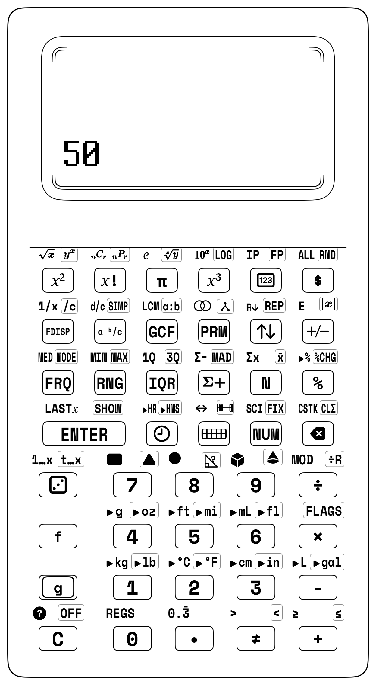
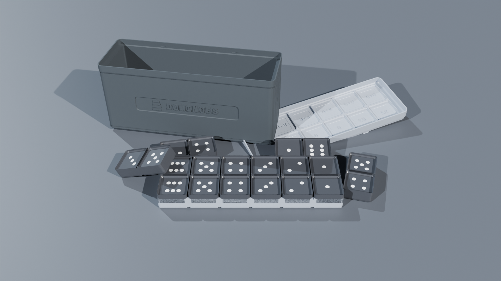

Applied Elementary STEM & Maker Labs
9.1 The Kitchen-Table Invention Studio: Turning Numbers into Moving Machines, Glowing Circuits, and 3D Prints
Picture the kitchen table on a rainy Saturday morning. In the center sits a spool of corn-based PLA filament, a pair of digital vernier calipers, a copper-foil tape dispenser, a handful of warm-white LEDs, and the solid, tactile form of your StackCalc SC-6 calculator. Outside, the rain taps against the glass; inside, the table is alive with invention.
For centuries, schoolchildren were told that mathematics was something that lived exclusively in the flat, monochrome world of paper workbooks—abstract symbols marching across ruled margins under the threat of a red grading pen. But mathematics was never meant to be trapped on paper. Mathematics is the hidden operating system of physical reality. It is the invisible scaffolding that allows a 3D printer nozzle heated to \(215^\circ\text{C}\) to deposit molten plastic accurate to the width of a human hair. It is the Ohm's Law ratio that protects a fragile miniature LED from burning out when connected to a 3-volt coin cell. It is the square-root harmonic law discovered by Galileo Galilei that keeps a grandfather clock ticking with perfect rhythmic cadence across centuries.
When you pick up the SC-6 in your workshop, you aren't just doing schoolwork—you are an engineer, a builder, and an inventor! With Stack Math, your numbers become as physical as the copper tape and plastic gears on your desk. You push lengths and weights onto the stack, tap your operations, and watch your ideas turn into real machines that whir, glow, and run!
For Parents & Teachers: Applied Maker STEM & Physical Calculation
In David Macaulay’s tradition of mechanical exposition *([Macaulay, 2016](appendix-c-formulas-and-conversions.md#cite-macaulay2016))*, Randall Munroe’s dimensional scaling *([Munroe, 2014](appendix-c-formulas-and-conversions.md#cite-munroe2014))*, and Matt Parker’s real-world computation analysis *([Parker, 2019](appendix-c-formulas-and-conversions.md#cite-parker2019))*, real mathematics is verified by whether the machine actually runs.

Chapter Baseline Mode: [NUM]
Standard Base-10 Arithmetic • 4-Stack XYZT • Clean Display *(Engage `[$]` Currency Mode for Final Cost Inspection)*Unlocked Keycaps Ribbon — Grades 5–6 Applied STEM & Everyday Carry Suite
• Engineering Math Keys: [x²] Square, [f] [√x] Square Root, [π] Constant Pi, [+], [-], [×], [÷].
• RPN Superpower 4: [f] [LASTX] (Prior Number Recall for Chained Electrical Power, Ratio Scaling, and Kinetic Energy).
• Statistical Accumulator: [Σ+] Coordinate Accumulation, [g] [x̄] Mean, `s` Sample Standard Deviation, [g] [CLΣ] Reset Statistics.
• Everyday Carry Percent & Money: [%] Percentage, [g] [%CHG] Percent Change, [$] Currency Formatting.
• Proportional Scaling & Fractions: [g] [a:b] Ratio Mode, [g] [SIMP] Factor Reduction, [a ᵇ/c] Mixed Numbers, [f] [LCM].
• Time & Angles: [f] [▸HR] (HMS to Decimal Hours), [g] [▸HMS] (Decimal Hours to HMS), [🕒] Clock Sandbox.

9.2 Building Real Things: From Workshop Tools to the Number Stack
Before we calculate on the keypad, we measure real things in the real world: 1. Physical Workshop (Build It!): You measure 3D printer filament with calipers, stick down copper tape for a paper flashlight, or count clock ticks with a timer. 2. Sketches and Diagrams (Draw It!): You draw circuit paths and lab notes in your notebook. 3. The Number Stack (Calculate It!): You stack your measurements on the SC-6, combining numbers without parentheses to find the perfect resistor or print time!
For Parents & Teachers: Maker STEM & Jerome Bruner's CRA Model
Following Jerome Bruner's Concrete-Representational-Abstract (CRA) framework *([Bruner, 1966](appendix-c-formulas-and-conversions.md#cite-bruner1966))*, the SC-6 embeds computational mathematics directly into hands-on science and fabrication labs.
The Maker Math Workshop Paradigm
- **Phase 1: Physical Reality** $\longrightarrow$ Vernier calipers, scales, lux meters, tape measures. - **Phase 2: Visual Modeling** $\longrightarrow$ Top-Down sketches, data logs, paper circuit schematics. - **Phase 3: RPN Computation** $\longrightarrow$ 4-stack XYZT evaluation, `[f] [LASTX]`, `[$]`, `[%]`. - **Phase 4: Maker Validation** $\longrightarrow$ Test physical part, launch projectile, light LED, start clock.9.3 Project 1: 3D Printing Filament Mass, Infill & Spool Cost Estimation
In modern classroom maker spaces, 3D printers turn digital CAD designs into physical objects. Before you send a job to the printer, calculate the volume of plastic extruded, convert that volume to mass in grams, and determine the exact financial cost from your filament budget.
Physical Model: The Filament Cylinder
Standard 3D printing filament is a flexible plastic cylinder with an exact diameter $d = 1.75\text{ mm}$ (radius $r = 0.875\text{ mm} = 0.0875\text{ cm}$). - **Cross-Sectional Area:** $A_f = \pi \times r^2 = \pi \times (0.0875\text{ cm})^2 \approx 0.0240528\text{ cm}^2$ - **Extruded Volume:** $V = A_f \times \text{Length (cm)}$ - **Part Mass (PLA):** $m = V \times \text{Density } (\rho = 1.24\text{ g/cm}^3)$ - **Part Cost:** $C = m \times (\text{Spool Price} / 1000\text{ g})$
9.3.1 Lab Mission 1.1: Estimating a 500 cm Print Model
Suppose your slicing software indicates that your pencil holder requires \(L = 500\text{ cm}\) (\(5.0\text{ meters}\)) of extruded filament. Your maker space uses a \(\$20.00\) spool of technical Midnight Navy PLA (\(1,000\text{ grams}\)).
Step 1: Compute Cross-Sectional Area (\(A_f = \pi r^2\))
- Enter radius in centimeters (\(0.0875\text{ cm}\)):
[.] 0875. - Square the radius: Press
[x²]\(\longrightarrow X = \mathbf{0.00765625\text{ cm}^2}\). - Multiply by \(\pi\): Press
[π] [×]\(\longrightarrow X \approx \mathbf{0.0240528\text{ cm}^2}\).
Step 2: Compute Extruded Volume (\(V = A_f \times L\))
- Enter sliced model length \(500\text{ cm}\):
500. - Multiply: Press
[×]\(\longrightarrow X \approx \mathbf{12.02641\text{ cm}^3}\).
Step 3: Compute Part Mass (\(m = V \times \rho\))
- Enter PLA density (\(1.24\text{ g/cm}^3\)):
1.24. - Multiply: Press
[×]: - Register \(X\) displays:
14.91275(The pencil holder weighs \(14.91\text{ grams}\))!
Step 4: Compute Part Cost from \(\$20 / 1000\text{ g}\) Spool
- Calculate cost per gram:
20 [ENTER] 1000 [÷]\(\longrightarrow X = 0.02\) (\(\$0.02\text{ per gram}\)). - Multiply mass by unit cost: Press
[×]: - Register \(X\) displays:
0.298255(\(\sim \$0.30\)). - Format as currency: Press
[$]:- Screen displays:
$0.30!
- Screen displays:
| Keystroke | Register T | Register Z | Register Y | Register X |
|---|---|---|---|---|
.0875 |
0 | 0 | 0 | 0.0875 |
| [x²] | 0 | 0 | 0 | 0.007656 |
| [π] [×] | 0 | 0 | 0 | 0.024053 |
500 [×] |
0 | 0 | 0 | 12.02641 |
1.24 [×] |
0 | 0 | 0 | 14.91275 |
20[ENTER] |
0 | 14.91275 | 14.91275 | 20 |
1000 [÷] |
0 | 0 | 14.91275 | 0.02 |
| [×] | 0 | 0 | 0 | 0.298255 |
| [$] | 0 | 0 | 0 | $0.30 |
9.3.2 Lab Mission 1.2: Infill Percentage Optimization
A solid plastic cube (\(100\%\) infill) consumes immense filament. By setting the slicer to \(15\%\) gyroid infill, how much filament mass and money do you save on a \(100\text{ cm}^3\) trophy base? - Solid Volume Mass: \(100\text{ cm}^3 \times 1.24\text{ g/cm}^3 = 124.0\text{ g}\). - Shell Volume: \(20\text{ cm}^3\) solid outer walls (\(20 \times 1.24 = 24.8\text{ g}\)). - Infill Volume: \(80\text{ cm}^3\) internal cavity at \(15\%\) density: \(80 \times 0.15 \times 1.24 = 14.88\text{ g}\). - Optimized Mass: \(24.8 + 14.88 = 39.68\text{ g}\). - Mass Saved: \(124.0 - 39.68 = 84.32\text{ g}\)!
| Keystroke | Register T | Register Z | Register Y | Register X |
|---|---|---|---|---|
| 124 | 0 | 0 | 0 | 124 |
| [ENTER] | 0 | 0 | 124 | 124 |
| [2][4][.][8] | 0 | 124 | 124 | 24.8 |
| [ENTER] | 124 | 124 | 24.8 | 24.8 |
| 80 | 124 | 24.8 | 24.8 | 80 |
| [ENTER] | 24.8 | 24.8 | 80 | 80 |
| [.][1][5][×] | 24.8 | 24.8 | 80 | 12 |
[1][.]24 [×] |
24.8 | 24.8 | 12 | 14.88 |
| [+] | 0 | 124 | 24.8 | 39.68 |
| [-] | 0 | 0 | 0 | 84.32 |
.02 [×] |
0 | 0 | 0 | 1.6864 |
| [$] | 0 | 0 | 0 | $1.69 |
9.4 Project 2: Batch Classroom Kit Production & Manufacturing Economics
Classroom maker spaces often fabricate complete manipulative sets using 3D printers. In this project, you analyze the manufacturing economics of producing a complete station kit.
9.4.1 Lab Mission 2.1: Manufacturing a Kit of 24 Interlocking Snap Cubes
How much does it cost to 3D print a complete classroom kit of 24 interlocking math cubes?
- Each \(20\text{ mm}\) cube consumes approximately \(3.1\text{ grams}\) of PLA.
- Total Kit Mass: 24 [ENTER] 3.1 [×] \(\longrightarrow \mathbf{74.4\text{ grams}}\).
- Total Kit Cost at \(\$0.02/\text{g}\): [.] [0] [2] [×] \(\longrightarrow 1.488\).
- Currency Mode: Press [$] \(\longrightarrow\) $1.49!
| Keystroke | Register T | Register Z | Register Y | Register X |
|---|---|---|---|---|
| 24 | 0 | 0 | 0 | 24 |
| [ENTER] | 0 | 0 | 24 | 24 |
| 3.1 | 0 | 0 | 24 | 3.1 |
| [×] | 0 | 0 | 0 | 74.4 |
| [.] 02 | 0 | 0 | 74.4 | 0.02 |
| [×] | 0 | 0 | 0 | 1.488 |
| [$] | 0 | 0 | 0 | $1.49 |
9.4.2 Lab Mission 2.2: Electrical Operating Costs & Machine Time
A classroom 3D printer draws an average electrical power of \(P = 120\text{ Watts}\) (\(0.120\text{ kW}\)). The 24-cube kit requires \(4.5\text{ hours}\) to print. The local municipal electric rate is \(\$0.15\text{ per kWh}\). 1. Energy Consumed: \(0.120\text{ kW} \times 4.5\text{ h} = 0.54\text{ kWh}\). 2. Electricity Cost: \(0.54 \times \$0.15 = \$0.081\) (\(\sim \$0.08\)). 3. Total Production Cost (Filament + Power): \(\$1.49 + \$0.08 = \mathbf{\$1.57}\) for the entire 24-cube kit!
| Keystroke | Register T | Register Z | Register Y | Register X |
|---|---|---|---|---|
| [.] 12 | 0 | 0 | 0 | 0.12 |
| [ENTER] | 0 | 0 | 0.12 | 0.12 |
| 4.5 | 0 | 0 | 0.12 | 4.5 |
| [×] | 0 | 0 | 0 | 0.54 |
| [.] 15 | 0 | 0 | 0.54 | 0.15 |
| [×] | 0 | 0 | 0 | 0.081 |
[1][.]49 [+] |
0 | 0 | 0 | 1.571 |
| [$] | 0 | 0 | 0 | $1.57 |
9.5 Project 3: Paper Circuit LED Current-Limiting Resistors & Power
Paper circuits combine adhesive copper foil tape, a coin cell battery, and an LED to create interactive greeting cards, lighted art projects, and science fair displays.
| Circuit Node | Component Specification | Electrical Role |
|---|---|---|
Power Source (+) |
CR2032 \(3.0\text{ V}\) Coin Cell | Supplies \(V_s = 3.0\text{ V}\) across copper tape |
| Current Limiter | Series Resistor \(R\) (\(\Omega\)) | Drops excess headroom voltage \(V_s - V_f\) |
Load & Return (-) |
Red LED (\(V_f = 2.0\text{ V}, I_f = 20\text{ mA}\)) | Emits light safely without thermal burnout |
9.5.1 The Engineering Physics & Ohm's Law
If you connect an LED directly to a battery without a resistor, excessive current will rush through the semiconductor diode junction, permanently burning out the LED. To protect the LED, we must insert a current-limiting resistor (\(R\)):
Where: - \(V_s\): Battery Supply Voltage (\(3.0\text{ V}\) for a CR2032 lithium coin cell). - \(V_f\): LED Forward Voltage Drop (\(2.0\text{ V}\) for a standard Red LED). - \(I_f\): Safe Target Current (\(20\text{ mA} = 0.020\text{ A}\)).
9.5.2 Lab Mission 3.1: Computing Resistor Value and Power Dissipation
Step 1: Calculate Voltage Headroom (\(V_s - V_f\))
- Enter battery voltage:
[3] [ENTER]. - Enter LED forward voltage:
[2] [-]: - Headroom: \(3.0 - 2.0 = \mathbf{1.0\text{ V}}\) in Register \(X\).
Step 2: Apply Ohm's Law (\(R = V / I\))
- Enter safe current in amperes (\(0.020\text{ A}\)):
[.] 020. - Divide: Press
[÷]: - Register \(X\) displays:
50.0(We need a \(50\,\Omega\) resistor)!
Step 3: Compute Resistor Power Dissipation (\(P = I^2 \times R\))
We must ensure our resistor does not overheat. We evaluate \(P = I^2 \times R\).
We use Superpower 4: [f] [LASTX] to recall the current without re-typing!
5. Press [f] [LASTX]:
- \(0.020\) is instantly recalled into Register \(X\)!
- The resistance (\(50.0\,\Omega\)) is automatically lifted into Register \(Y\)!
6. Square the current (\(I^2\)): Press [x²] \(\longrightarrow X = 0.0004\text{ A}^2\).
7. Multiply by resistance (\(R\)): Press [×]:
- Register \(X\) displays: 0.020 (\(0.020\text{ W} = \mathbf{20\text{ mW}}\))!
| Keystroke | Register T | Register Z | Register Y | Register X |
|---|---|---|---|---|
| [3] [ENTER] | 0 | 0 | 3 | 3 |
| [2] [-] | 0 | 0 | 0 | 1.0 |
.020 [÷] |
0 | 0 | 0 | 50.0 |
| [f] [LASTX] | 0 | 0 | 50.0 | 0.020 |
| [x²] | 0 | 0 | 50.0 | 0.0004 |
| [×] | 0 | 0 | 0 | 0.020 |
9.5.3 Lab Mission 3.2: High-Voltage 9V Battery Circuit with Blue LED
Suppose you build a stage beacon using a 9V alkaline battery (\(V_s = 9.0\text{ V}\)) and a high-intensity Blue LED (\(V_f = 3.2\text{ V}\), \(I_f = 0.020\text{ A}\)):
1. Voltage Headroom: 9 [ENTER] 3.2 [-] \(\longrightarrow X = \mathbf{5.8\text{ V}}\).
2. Resistor Value: [.] 020 [÷] \(\longrightarrow\) 290.0 Ω.
3. Power Dissipation via [f] [LASTX]:
- [f] [LASTX] [x²] [×] \(\longrightarrow\) 0.116 W (\(116\text{ mW}\)).
| Keystroke | Register T | Register Z | Register Y | Register X |
|---|---|---|---|---|
| [9] [ENTER] | 0 | 0 | 9 | 9 |
| [3][.][2][-] | 0 | 0 | 0 | 5.8 |
.020 [÷] |
0 | 0 | 0 | 290.0 |
| [f] [LASTX] | 0 | 0 | 290.0 | 0.020 |
| [x²] | 0 | 0 | 290.0 | 0.0004 |
| [×] | 0 | 0 | 0 | 0.116 |
9.6 Project 4: Simple Pendulum Period Measurement & Gravity
A simple pendulum consists of a small mass (a steel nut or 3D-printed bob) suspended from a light string. Galileo discovered that for small swings, the period of oscillation depends exclusively on the length of the string and the acceleration of gravity, completely independent of the bob's mass.
Physical Model: The Simple Pendulum
A small mass is suspended from a string of length $L$ swinging in a small arc. - **Theoretical Period:** $T = 2\pi \times \sqrt{L / g}$ - **Experimental Period:** $\bar{T} = \text{Total Time} / 10\text{ Swings}$ - **Derived Gravity:** $g = \frac{4\pi^2 \times L}{T^2}$
9.6.1 Lab Mission 4.1: Timing 10 Swings with a 1.0 Meter Pendulum
You hang a pendulum of measured length \(L = 1.00\text{ meter}\). Using a stopwatch, you and your team time 10 complete back-and-forth cycles: $\(\text{Measured 10-cycle time} = 20.1\text{ seconds}\)$
Step 1: Calculate Mean Period \(\bar{T}\)
- Enter recorded time:
20.1 [ENTER]. - Divide by 10 swings:
10 [÷]\(\longrightarrow X = \mathbf{2.01\text{ seconds per period}}\).
Step 2: Compute Local Gravitational Acceleration (\(g = 4\pi^2 L / T^2\))
- Square the period: Press
[x²]\(\longrightarrow X = 4.0401\text{ s}^2\). - Calculate \(4\pi^2\): Press
4 [ENTER] [π] [x²] [×]\(\longrightarrow X \approx 39.4784\). - Multiply by length (\(L = 1.0\text{ m}\)): Press
[1] [×]. - Exchange and divide by \(T^2\): Press
[x⇄y] [÷]: - Register \(X\) displays:
9.7716(\(\sim \mathbf{9.77\text{ m/s}^2}\))!
| Keystroke | Register T | Register Z | Register Y | Register X |
|---|---|---|---|---|
20.1[ENTER] |
0 | 0 | 0 | 20.1 |
10 [÷] |
0 | 0 | 0 | 2.01 |
| [x²] | 0 | 0 | 0 | 4.0401 |
| [4] [ENTER] | 0 | 0 | 4.0401 | 4 |
| [π] [x²] [×] | 0 | 0 | 4.0401 | 39.4784 |
| [1] [×] | 0 | 0 | 4.0401 | 39.4784 |
| [x⇄y] [÷] | 0 | 0 | 0 | 9.7716 |
| (Compared to the accepted standard \(g = 9.80665\text{ m/s}^2\), your hands-on experiment achieves less than \(0.4\%\) experimental error!) |
9.6.2 Lab Mission 4.2: Designing a 1-Second Grandfather Clock Pendulum
What string length \(L\) creates a "seconds pendulum" that ticks exactly once every second (\(T = 2.0\text{ seconds}\) for a complete round trip)? $\(L = \frac{g \times T^2}{4\pi^2} = \frac{9.80665 \times 2.0^2}{4 \times \pi^2} = \frac{39.2266}{39.4784} \approx \mathbf{0.9936\text{ meters}} \ (99.4\text{ cm})\)$
| Keystroke | Register T | Register Z | Register Y | Register X |
|---|---|---|---|---|
9.80665 |
0 | 0 | 0 | 9.80665 |
| [ENTER] | 0 | 0 | 9.80665 | 9.80665 |
| [2] [x²] | 0 | 0 | 9.80665 | 4 |
| [×] | 0 | 0 | 0 | 39.2266 |
| [4] [ENTER] | 0 | 0 | 39.2266 | 4 |
| [π] [x²] [×] | 0 | 0 | 39.2266 | 39.4784 |
| [÷] | 0 | 0 | 0 | 0.9936 |
9.7 Project 5: Solar Oven Thermal Tracking & Efficiency Rates
In solar energy science labs, you construct a cardboard box solar cooker lined with aluminum foil, topped with clear plastic wrap, and insulated with crumpled newspaper.
| Thermal Parameter | Symbol / Formula | Physical Meaning |
|---|---|---|
| Temperature Rise | \(\Delta T = T_2 - T_1\) | Total degrees Celsius gained inside absorber tray |
| Elapsed Interval | \(\Delta t\) | Heating duration in minutes |
| Heating Velocity | \(\text{Rate} = \Delta T / \Delta t\) | Degrees Celsius gained per minute (\(^\circ\text{C/min}\)) |
9.7.1 Lab Mission 5.1: Measuring Solar Heating Velocity
Place your solar cooker in direct sunlight at solar noon. Your internal digital temperature probe records: - Initial Temperature at \(t = 0\text{ min}\): \(T_1 = 22.5^\circ\text{C}\) - Final Temperature at \(t = 25\text{ min}\): \(T_2 = 78.0^\circ\text{C}\)
- Temperature Rise (\(\Delta T\)):
78 [ENTER] 22.5 [-]\(\longrightarrow X = \mathbf{55.5^\circ\text{C}}\). - Elapsed Time (\(\Delta t\)):
25 [÷]\(\longrightarrow X = \mathbf{2.22^\circ\text{C per minute}}\)! - Percentage Increase (
[g] [%CHG]): 22.5 [ENTER] 78 [g] [%CHG]\(\longrightarrow X = \mathbf{+246.67\%}\) increase!
| Keystroke | Register T | Register Z | Register Y | Register X |
|---|---|---|---|---|
| 78 | 0 | 0 | 0 | 78 |
| [ENTER] | 0 | 0 | 78 | 78 |
| [2][2][.][5] | 0 | 0 | 78 | 22.5 |
| [-] | 0 | 0 | 0 | 55.5 |
| 25 | 0 | 0 | 55.5 | 25 |
| [÷] | 0 | 0 | 0 | 2.22 |
9.7.2 Lab Mission 5.2: Thermal Insulation Retention Ratio
After reaching \(78^\circ\text{C}\), move your oven into shaded ambient air (\(22^\circ\text{C}\)) to test its insulation. After 30 minutes, the oven temperature drops to \(56^\circ\text{C}\). - Total Heat Retained: \(\frac{56 - 22}{78 - 22} = \frac{34}{56} \approx \mathbf{60.71\%}\) retention!
| Keystroke | Register T | Register Z | Register Y | Register X |
|---|---|---|---|---|
| 56 | 0 | 0 | 0 | 56 |
| [ENTER] | 0 | 0 | 56 | 56 |
| 22 [-] | 0 | 0 | 0 | 34 |
| 78 | 0 | 0 | 34 | 78 |
| [ENTER] | 0 | 34 | 78 | 78 |
| 22 [-] | 0 | 0 | 34 | 56 |
| [÷] | 0 | 0 | 0 | 0.6071 |
| [1][0][0][×] | 0 | 0 | 0 | 60.71 |
9.8 Project 6: Catapult Trajectory Math & Projectile Launch Analysis
Build a tabletop wooden or 3D-printed lever catapult powered by rubber bands. Launch small clay projectiles at varying pullback angles (\(30^\circ, 45^\circ, 60^\circ\)) to analyze launch distances and compute statistical variance.
| Apparatus Variable | Controlled / Measured Value | Experimental Role |
|---|---|---|
| Pullback Angle (\(\theta\)) | \(30^\circ, 45^\circ, 60^\circ\) | Independent variable controlling elastic potential energy |
| Landing Distance (\(D\)) | Measured in \(\text{cm}\) along floor tape | Dependent variable accumulated via [Σ+] |
9.8.1 Lab Mission 6.1: Five-Trial Statistical Analysis at \(45^\circ\)
Conduct 5 launches at a calibrated \(45^\circ\) pullback angle, recording distance in centimeters: $\(D = \{ 182\text{ cm}, 195\text{ cm}, 188\text{ cm}, 201\text{ cm}, 189\text{ cm} \}\)$
Accumulate each trial into the SC-6 hardware statistical registers using [Σ+]:
1. Reset statistics: Press [g] [CLΣ].
2. Enter Trial 1: 182 [Σ+] \(\longrightarrow n = 1\).
3. Enter Trial 2: 195 [Σ+] \(\longrightarrow n = 2\).
4. Enter Trial 3: 188 [Σ+] \(\longrightarrow n = 3\).
5. Enter Trial 4: 201 [Σ+] \(\longrightarrow n = 4\).
6. Enter Trial 5: 189 [Σ+] \(\longrightarrow n = 5\).
7. Recall Mean (\(\bar{x}\)): Press [g] [x̄] \(\longrightarrow X = \mathbf{191.00\text{ cm}}\).
8. Recall Mean Absolute Deviation (\(\text{MAD}\)): Press [g] [MAD] \(\longrightarrow X = \mathbf{5.20\text{ cm}}\).
| Keystroke | Register T | Register Z | Register Y | Register X |
|---|---|---|---|---|
| [CLΣ] | 0 | 0 | 0 | 0 |
182 [Σ+] |
0 | 0 | 0 | n = 1 |
195 [Σ+] |
0 | 0 | 0 | n = 2 |
188 [Σ+] |
0 | 0 | 0 | n = 3 |
201 [Σ+] |
0 | 0 | 0 | n = 4 |
189 [Σ+] |
0 | 0 | 0 | n = 5 |
| [g] [x̄] | 0 | 0 | 0 | 191.00 |
[f] s |
0 | 0 | 191.00 | 7.28 |
9.8.2 Lab Mission 6.2: Target Ring Landing Probability
If a circular scoring target has radius \(R = 15\text{ cm}\) centered at \(190\text{ cm}\), the target spans \(175\text{ cm}\) to \(205\text{ cm}\). Since the mean is \(191.00\text{ cm}\) and \(2s = 14.56\text{ cm}\), the \(2\sigma\) interval is \([176.44\text{ cm}, 205.56\text{ cm}]\). Over \(95\%\) of all shots will land directly inside the scoring ring!
| Keystroke | Register T | Register Z | Register Y | Register X |
|---|---|---|---|---|
[7] [.] 28 |
0 | 0 | 0 | 7.28 |
| [ENTER] | 0 | 0 | 7.28 | 7.28 |
| [2] [×] | 0 | 0 | 0 | 14.56 |
191[ENTER] |
0 | 0 | 14.56 | 191 |
| [x⇄y] [-] | 0 | 0 | 0 | 176.44 |
191[ENTER] |
0 | 0 | 176.44 | 191 |
14.56 [+] |
0 | 0 | 176.44 | 205.56 |
9.9 Project 7: Plant Growth Tracking & Proportional Rate Analysis
In life science experiments, you grow bean sprouts under different light conditions (natural sunlight vs. red LED growth lamp), measuring stem height in millimeters every two days for two weeks.
14-DAY BOTANY GROWTH TRACKING LOG
Day (t): 2 4 6 8 10 12 14 Height h: 12 28 49 74 105 138 172 (mm)
9.9.1 Lab Mission 7.1: Daily Growth Velocity
What was the sprout's average daily growth rate between Day 4 (\(28\text{ mm}\)) and Day 10 (\(105\text{ mm}\))? $\(\text{Rate} = \frac{h_2 - h_1}{t_2 - t_1} = \frac{105 - 28}{10 - 4} = \frac{77\text{ mm}}{6\text{ days}} \approx \mathbf{12.83\text{ mm/day}}\)$
| Keystroke | Register T | Register Z | Register Y | Register X |
|---|---|---|---|---|
| 105 | 0 | 0 | 0 | 105 |
| [ENTER] | 0 | 0 | 105 | 105 |
| 28 [-] | 0 | 0 | 0 | 77 |
| 10 | 0 | 0 | 77 | 10 |
| [ENTER] | 0 | 77 | 10 | 10 |
| [4] [-] | 0 | 0 | 77 | 6 |
| [÷] | 0 | 0 | 0 | 12.83 |
9.9.2 Lab Mission 7.2: Overall Growth Percentage
Calculate the total percent increase from Day 2 (\(12\text{ mm}\)) to Day 14 (\(172\text{ mm}\)):
- 12 [ENTER] 172 [g] [%CHG] \(\longrightarrow X = \mathbf{+1333.33\%}\) growth!
| Keystroke | Register T | Register Z | Register Y | Register X |
|---|---|---|---|---|
| 12 | 0 | 0 | 0 | 12 |
| [ENTER] | 0 | 0 | 12 | 12 |
| 172 | 0 | 0 | 12 | 172 |
| [%CHG] | 0 | 0 | 0 | 1333.33 |
9.10 Project 8: Culinary Chemistry & Baker's Percentage Recipe Scaling
In culinary arts and life skills, recipes must be scaled proportionally. Professional bakers use Baker's Percentages, where the weight of flour is always designated as \(100\%\), and all other ingredients are calculated as a percentage of flour weight.
BAKER'S PERCENTAGE FORMULATION SHEET
Bread Flour: 100.0% (Base Ingredient) Water (Hydration): 68.0% Yeast: 1.5% Salt: 2.0% Total Formula: 171.5%
9.10.1 Lab Mission 8.1: Scaling Bread for a 28-Guest Banquet
The standard loaf requires \(500\text{ grams}\) of flour and yields 4 generous servings. You need to bake bread for 28 guests (\(7\times\) scaling factor).
- Total Flour:
500 [ENTER] 7 [×]\(\longrightarrow X = \mathbf{3,500\text{ grams}}\) (\(3.5\text{ kg}\)). - Water (\(68\%\) hydration):
3500 [ENTER] 68 [%]\(\longrightarrow X = \mathbf{2,380\text{ grams}}\) (\(2.38\text{ L}\)). - Salt (\(2.0\%\)):
3500 [ENTER] 2 [%]\(\longrightarrow X = \mathbf{70\text{ grams}}\). - Yeast (\(1.5\%\)):
3500 [ENTER] 1.5 [%]\(\longrightarrow X = \mathbf{52.5\text{ grams}}\).
| Keystroke | Register T | Register Z | Register Y | Register X |
|---|---|---|---|---|
500 [ENTER] |
0 | 0 | 0 | 500 |
| [7] [×] | 0 | 0 | 0 | 3500 |
68 [%] |
0 | 0 | 3500 | 2380 |
| [x⇄y] | 0 | 0 | 2380 | 3500 |
| [2] [%] | 0 | 0 | 3500 | 70 |
| [x⇄y] | 0 | 0 | 70 | 3500 |
1.5 [%] |
0 | 0 | 3500 | 52.5 |
9.10.2 Lab Mission 8.2: Scaling Down a Liquid Measuring Cup Recipe
A pancake recipe requires \(1\ \frac{3}{4}\) cups of milk for 8 pancakes. You are making breakfast for two (2 pancakes, scale factor \(2/8 = 1/4\)):
- Enter milk: [1] [.] 3 [.] 4 [ENTER].
- Divide by 4: [4] [÷].
- Result: 7/16 cup of milk!
| Keystroke | Register T | Register Z | Register Y | Register X |
|---|---|---|---|---|
| [1][.][3][.][4] | 0 | 0 | 0 | 1 3/4 |
| [ENTER] | 0 | 0 | 1 3/4 | 1 3/4 |
| [4] | 0 | 0 | 1 3/4 | 4 |
| [÷] | 0 | 0 | 0 | 7/16 |
9.11 Project 9: Compound Gear Train Ratios & Mechanical Advantage
Build gear mechanisms using 3D-printed gears or modular robotics sets. Discover how interlocking teeth trade speed for torque.
| Reduction Stage | Driver Gear | Driven Gear | Stage Ratio |
|---|---|---|---|
| Stage 1 (Input Shaft) | Gear A (\(12\text{ teeth}\)) | Gear B (\(36\text{ teeth}\)) | \(36 / 12 = 3:1\) |
| Stage 2 (Shared Intermediate Shaft) | Gear C (\(16\text{ teeth}\)) | Gear D (\(48\text{ teeth}\)) | \(48 / 16 = 3:1\) |
| Compound Output | — | — | \(3 \times 3 = 9:1\) |
9.11.1 The Gear Ratio Formula
For a compound train with two reduction stages: $\(R_{\text{total}} = \frac{N_B}{N_A} \times \frac{N_D}{N_C}\)$
9.11.2 Lab Mission 9.1: Computing Total Compound Gear Reduction
Stage 1: Gear A (\(12\text{ teeth}\)) drives Gear B (\(36\text{ teeth}\)).
Stage 2: Gear C (\(16\text{ teeth}\)) drives Gear D (\(48\text{ teeth}\)).
- Stage 1 Ratio:
36 [ENTER] 12 [÷]\(\longrightarrow X = \mathbf{3.0}\). - Stage 2 Ratio:
48 [ENTER] 16 [÷]\(\longrightarrow X = \mathbf{3.0}\). - Compound Ratio: Press
[×]: - Register \(X\) displays:
9.0(A true \(9:1\) reduction)!
| Keystroke | Register T | Register Z | Register Y | Register X |
|---|---|---|---|---|
| 36 | 0 | 0 | 0 | 36 |
| [ENTER] | 0 | 0 | 36 | 36 |
| 12 [÷] | 0 | 0 | 0 | 3.0 |
| 48 | 0 | 0 | 3.0 | 48 |
| [ENTER] | 0 | 3.0 | 48 | 48 |
| 16 [÷] | 0 | 0 | 3.0 | 3.0 |
| [×] | 0 | 0 | 0 | 9.0 |
9.11.3 Lab Mission 9.2: Calculating Output Shaft Speed
If the input electric motor spins at \(1,800\text{ RPM}\), what is the final output shaft speed?
- 1800 [x⇄y] [÷] \(\longrightarrow X = \mathbf{200\text{ RPM}}\)!
| Keystroke | Register T | Register Z | Register Y | Register X |
|---|---|---|---|---|
| [1][8][0][0] | 0 | 0 | 9.0 | 1800 |
| [x⇄y] | 0 | 0 | 1800 | 9.0 |
| [÷] | 0 | 0 | 0 | 200 |
9.12 Project 10: Hydraulic Syringe Lift & Pascal's Principle
Explore fluid power using two plastic medical syringes of different diameters connected by flexible vinyl tubing filled with water.
| Hydraulic Cylinder | Piston Diameter | Relative Cross-Section Area | Force Relationship (\(P_1 = P_2\)) |
|---|---|---|---|
| Small Input Syringe (\(A_1\)) | \(d_1 = 1.0\text{ cm}\) | \(1\times\) baseline area | Input effort \(F_1\) |
| Large Output Syringe (\(A_2\)) | \(d_2 = 3.0\text{ cm}\) | \((d_2 / d_1)^2 = 9\times\) area | Output lift \(F_2 = 9 \times F_1\) |
9.12.1 Lab Mission 10.1: Mechanical Force Multiplication Factor
Input syringe diameter \(d_1 = 1.0\text{ cm}\); output syringe diameter \(d_2 = 3.0\text{ cm}\).
1. Enter output diameter: [3] [ENTER].
2. Enter input diameter: [1] [÷].
3. Square the diameter ratio: Press [x²]:
- Register \(X\) displays: 9.0 (The mechanical advantage is \(9\times\))!
| Keystroke | Register T | Register Z | Register Y | Register X |
|---|---|---|---|---|
| [3] | 0 | 0 | 0 | 3 |
| [ENTER] | 0 | 0 | 3 | 3 |
| [1] | 0 | 0 | 3 | 1 |
| [÷] | 0 | 0 | 0 | 3 |
| [x²] | 0 | 0 | 0 | 9 |
9.12.2 Lab Mission 10.2: Lifting a 4.5 kg Weight
If you push the small syringe with a force of \(F_1 = 5.0\text{ Newtons}\) (\(\approx 0.5\text{ kg}\) effort), what force is exerted by the large syringe?
- 5.0 [×] \(\longrightarrow X = \mathbf{45.0\text{ Newtons}}\) (\(\approx \mathbf{4.59\text{ kg}}\) lift)!
| Keystroke | Register T | Register Z | Register Y | Register X |
|---|---|---|---|---|
| 5.0 | 0 | 0 | 9 | 5.0 |
| [×] | 0 | 0 | 0 | 45.0 |
9.8 [÷] |
0 | 0 | 0 | 4.59 |
9.13 Project 11: Drone Flight Battery Endurance & Power Budget
Miniature indoor quadcopters powered by lithium-polymer (LiPo) batteries are popular STEM tools. In this project, you calculate power consumption and flight endurance.
DRONE ELECTRICAL POWER BUDGET
Battery Capacity: 850 mAh = 0.850 Ah Hover Current Draw: 4.2 Amperes = 4200 mA Usable Battery Margin: 80% (20% reserve to prevent LiPo damage)
Flight Time (Minutes): t = (Capacity × Usable Margin × 60) / Current
9.13.1 Lab Mission 11.1: Calculating Safe Hover Duration
- Enter battery capacity:
850 [ENTER]. - Apply \(80\%\) reserve margin:
[.] [8] [×]\(\longrightarrow X = \mathbf{680\text{ mAh usable}}\). - Convert hours to minutes:
60 [×]\(\longrightarrow X = \mathbf{40,800\text{ mA}\cdot\text{min}}\). - Divide by total hover current (\(4,200\text{ mA}\)):
4200 [÷]: - Register \(X\) displays: \(9.714\text{ minutes}\)!
- Convert decimal minutes to minutes and seconds:
- Safe flight timer: 9 minutes 43 seconds!
| Keystroke | Register T | Register Z | Register Y | Register X |
|---|---|---|---|---|
| 850 | 0 | 0 | 0 | 850 |
| [ENTER] | 0 | 0 | 850 | 850 |
| [.] [8] [×] | 0 | 0 | 0 | 680 |
| 60 [×] | 0 | 0 | 0 | 40800 |
4200 [÷] |
0 | 0 | 0 | 9.714 |
9.13.2 Lab Mission 11.2: Drone Payload Penalty & Reduced Endurance
Mount an action camera (\(m = 45\text{ grams}\)) to the drone. The increased lift requirement increases the hover current draw from \(4,200\text{ mA}\) to \(5,500\text{ mA}\).
1. Calculate the new flight duration with payload:
- Available capacity: \(680\text{ mAh}\) (\(80\%\) of \(850\text{ mAh}\)).
- Flight minutes: \((680 \times 60) \div 5,500 = 7.418\text{ minutes}\) (\(7\text{ min } 25\text{ sec}\)).
2. Calculate the percentage reduction in endurance:
- Initial time: \(9.714\text{ min}\).
- New time: \(7.418\text{ min}\).
- Percent change: 9.714 [ENTER] 7.418 [g] [%CHG] \(\longrightarrow \mathbf{-23.64\%}\) penalty!
| Keystroke | Register T | Register Z | Register Y | Register X |
|---|---|---|---|---|
680 [ENTER] |
0 | 0 | 0 | 680 |
60 [×] |
0 | 0 | 0 | 40800 |
5500 [÷] |
0 | 0 | 0 | 7.418 |
9.714[ENTER] |
0 | 0 | 7.418 | 9.714 |
| [x⇄y] | 0 | 0 | 9.714 | 7.418 |
| [%CHG] | 0 | 0 | 0 | -23.64 |
9.14 Project 12: Photovoltaic Solar Panel Tilt Angle & Irradiance
In clean energy science labs, you evaluate how solar panel orientation impacts electrical power generation using Lambert's Cosine Law.
| Incident Tilt Angle \(\theta\) | Cosine Projection Factor (\(\cos\theta\)) | Received Solar Power \(P(\theta) = P_{\max}\cos\theta\) |
|---|---|---|
| \(0^\circ\) (Perpendicular) | \(1.0000\) | \(100.0\%\) of \(P_{\max}\) |
| \(30^\circ\) Tilt | \(0.8660\) | \(86.6\%\) of \(P_{\max}\) |
| \(45^\circ\) Tilt | \(0.7071\) | \(70.7\%\) of \(P_{\max}\) |
| \(60^\circ\) Tilt | \(0.5000\) | \(50.0\%\) of \(P_{\max}\) |
9.14.1 Lab Mission 12.1: Solar Power at Varying Incident Angles
A classroom solar panel produces \(P_{\text{max}} = 5.0\text{ Watts}\) when perpendicular to direct sunlight (\(\theta = 0^\circ\)). What power does it generate at tilt angles of \(30^\circ, 45^\circ,\) and \(60^\circ\)?
- At \(\theta = 30^\circ\) (Volvelle shadow factor \(\cos 30^\circ \approx 0.866\)):
5 [ENTER] 0.866 [×]\(\longrightarrow X = \mathbf{4.33\text{ Watts}}\) (\(86.6\%\)).- At \(\theta = 45^\circ\) (Volvelle shadow factor \(\cos 45^\circ \approx 0.7071\)):
5 [ENTER] 0.7071 [×]\(\longrightarrow X = \mathbf{3.54\text{ Watts}}\) (\(70.7\%\)).- At \(\theta = 60^\circ\) (Volvelle shadow factor \(\cos 60^\circ = 0.500\)):
5 [ENTER] .5 [×]\(\longrightarrow X = \mathbf{2.50\text{ Watts}}\) (\(50.0\%\)).
| Keystroke | Register T | Register Z | Register Y | Register X |
|---|---|---|---|---|
| [5] [ENTER] | 0 | 0 | 5 | 5 |
| .866 (30° factor) | 0 | 0 | 5 | 0.8660 |
| [×] | 0 | 0 | 0 | 4.33 |
| Angle (θ) | cos(θ) | Peak Watts | Output Power | Power Ratio |
|---|---|---|---|---|
| 0° | 1.0000 | 5.00 W | 5.00 W | 100.0% |
| 30° | 0.8660 | 5.00 W | 4.33 W | 86.6% |
| 45° | 0.7071 | 5.00 W | 3.54 W | 70.7% |
| 60° | 0.5000 | 5.00 W | 2.50 W | 50.0% |
9.14.2 Lab Mission 12.2: Daily Kilowatt-Hour Solar Harvest Integration
Record the power output of an outdoor solar panel at three key intervals during a sunny school day: - Morning (9:00 AM, \(\theta = 60^\circ\)): \(2.50\text{ Watts}\) for 3 hours \(\longrightarrow 7.50\text{ Watt-hours}\). - Solar Noon (12:00 PM, \(\theta = 0^\circ\)): \(5.00\text{ Watts}\) for 2 hours \(\longrightarrow 10.00\text{ Watt-hours}\). - Afternoon (3:00 PM, \(\theta = 45^\circ\)): \(3.54\text{ Watts}\) for 3 hours \(\longrightarrow 10.62\text{ Watt-hours}\).
Accumulate each energy interval using the SC-6 statistical accumulator [Σ+]:
1. Reset statistics: [g] [CLΣ].
2. Morning interval: 2.5 [ENTER] [3] [×] [Σ+] \(\longrightarrow n = 1\) (\(7.5\text{ Wh}\)).
3. Noon interval: [5] [ENTER] [2] [×] [Σ+] \(\longrightarrow n = 2\) (\(10.0\text{ Wh}\)).
4. Afternoon interval: 3.54 [ENTER] [3] [×] [Σ+] \(\longrightarrow n = 3\) (\(10.62\text{ Wh}\)).
5. Total Daily Energy: Recall [f] [Σx] \(\longrightarrow X = \mathbf{28.12\text{ Watt-hours}}\)!
6. Convert to Kilowatt-hours: 1000 [÷] \(\longrightarrow X = \mathbf{0.02812\text{ kWh}}\).
| Keystroke | Register T | Register Z | Register Y | Register X |
|---|---|---|---|---|
| [CLΣ] | 0 | 0 | 0 | 0 |
2.5[3][×] |
0 | 0 | 0 | 7.5 |
| [Σ+] | 0 | 0 | 0 | n = 1 |
| [5][2][×] | 0 | 0 | 0 | 10.0 |
| [Σ+] | 0 | 0 | 0 | n = 2 |
3.54[3][×] |
0 | 0 | 0 | 10.62 |
| [Σ+] | 0 | 0 | 0 | n = 3 |
| [f] [Σx] | 0 | 0 | 0 | 28.12 |
1000 [÷] |
0 | 0 | 0 | 0.02812 |
9.15 Maker Lab Engineering Notebook & Uncertainty Protocol
Professional engineers never report a measurement without estimating its experimental uncertainty. In this section, you learn to calculate Percentage Error and evaluate Manufacturing Tolerances on the SC-6.
9.15.1 Lab Mission 13.1: Calculating Pendulum Gravity Error
In Project 4, your experimental gravity was \(g_{\text{exp}} = 9.7716\text{ m/s}^2\). The standard accepted theoretical value is \(g_{\text{theo}} = 9.80665\text{ m/s}^2\). What is the experimental error?
| Keystroke | Register T | Register Z | Register Y | Register X |
|---|---|---|---|---|
9.7716 |
0 | 0 | 0 | 9.7716 |
| [ENTER] | 0 | 0 | 9.7716 | 9.7716 |
9.80665 |
0 | 0 | 9.7716 | 9.80665 |
| [-] | 0 | 0 | 0 | -0.03505 |
| [ABS] | 0 | 0 | 0 | 0.03505 |
9.80665 |
0 | 0 | 0.03505 | 9.80665 |
| [÷] | 0 | 0 | 0 | 0.003574 |
100 [×] |
0 | 0 | 0 | 0.357% |
| (You achieved an outstanding \(0.36\%\) experimental error!) |
9.15.2 Lab Mission 13.2: 3D Printing Snap-Fit Tolerance Stack
When 3D printing interlocking parts (like the Gridfinity pins or snap cubes), thermal shrinkage and nozzle expansion require a mechanical clearance of \(\pm 0.15\text{ mm}\). If a peg has diameter \(d_{\text{peg}} = 10.00\text{ mm}\), what is the minimum hole diameter required for a smooth friction fit? $\(d_{\text{hole}} = 10.00\text{ mm} + 2 \times 0.15\text{ mm} = 10.30\text{ mm}\)$
RPN Keystrokes: 10 [ENTER] [.] 15 [ENTER] [2] [×] [+] -> 10.30 mm
9.15.3 Lab Mission 13.3: Digital Scale Tare & Filament Density Verification
In maker spaces, verify whether a spool of unknown plastic is PLA or ABS by measuring Archimedes' buoyant force or calculating solid density (\(\rho = m / V\)):
1. A calibrated 3D-printed test cube measures exactly \(20.0\text{ mm} \times 20.0\text{ mm} \times 20.0\text{ mm}\) (\(2.0\text{ cm}\) on each edge).
- Volume: 2 [ENTER] 2 [×] 2 [×] \(\longrightarrow X = \mathbf{8.00\text{ cm}^3}\).
2. The digital precision balance is tared. The cube weighs \(m = 9.92\text{ grams}\).
3. Calculate density: 9.92 [x⇄y] [÷]:
- Register \(X\) displays: \(1.24\text{ g/cm}^3\).
- Comparing against the material spec sheet confirms: the plastic is authentic PLA (\(\rho = 1.24\text{ g/cm}^3\)), not lightweight ABS (\(\rho = 1.04\text{ g/cm}^3\))!
| Keystroke | Register T | Register Z | Register Y | Register X |
|---|---|---|---|---|
| [2] [ENTER] | 0 | 0 | 2 | 2 |
| [2] [×] | 0 | 0 | 0 | 4 |
| [2] [×] | 0 | 0 | 0 | 8.0 |
| [9][.][9][2] | 0 | 0 | 8.0 | 9.92 |
| [x⇄y] | 0 | 0 | 9.92 | 8.0 |
| [÷] | 0 | 0 | 0 | 1.24 |
9.16 Maker Space Machine Safety Protocols & Electrical Protection
Operating fabrication machinery requires strict adherence to classroom safety rules and electrical power limitations:
Workshop Safety & Electrical Power Protocols
1. **Thermal Safety:** 3D printer hotends reach $210^\circ\text{C} - 245^\circ\text{C}$; heated build plates reach $60^\circ\text{C}$. Never touch nozzles or heating blocks during extrusion. 2. **Electrical Safety:** Never short-circuit lithium batteries. LiPo cells can discharge at rates $> 30\text{C}$, creating immediate thermal runaway and fire hazards if punctured or reverse-polarized. 3. **Eye Protection:** Always wear ANSI Z87.1 approved safety glasses when launching catapults, testing hydraulic cylinders, or trimming wire leads with flush cutters. 4. **Ventilation:** Ensure active classroom exhaust or HEPA/activated-carbon filtration when 3D printing to prevent ultrafine particle and VOC accumulation.9.16.1 Lab Mission 14.1: Circuit Breaker Branch Load Budgeting
A classroom maker lab has four 3D printers (\(150\text{ W}\) each), two laptop workstations (\(65\text{ W}\) each), and a HEPA air filtration unit (\(80\text{ W}\)) all plugged into a single \(120\text{ V}\), \(15\text{ Amp}\) branch circuit. Does the total maker space electrical load exceed the National Electrical Code (NEC) continuous \(80\%\) safety limit (\(12\text{ Amps}\))?
- Total Power:
- 4 printers:
4 [ENTER] 150 [×]\(\longrightarrow 600\text{ W}\). - 2 laptops:
2 [ENTER] 65 [×] [+]\(\longrightarrow 730\text{ W}\). - 1 filter:
80 [+]\(\longrightarrow \mathbf{810\text{ Watts total}}\). - Current Draw at \(120\text{ Volts}\) (\(I = P / V\)):
120 [÷]\(\longrightarrow X = \mathbf{6.75\text{ Amperes}}\).- Continuous Circuit Limit (\(15\text{ A} \times 80\%\)):
15 [ENTER] 80 [%]\(\longrightarrow X = \mathbf{12.00\text{ Amperes}}\).- Margin Available:
12 [ENTER] 6.75 [-]\(\longrightarrow X = \mathbf{5.25\text{ Amps remaining}}\).- Conclusion: The equipment is completely safe and operates well within electrical safety limits!
| Keystroke | Register T | Register Z | Register Y | Register X |
|---|---|---|---|---|
[4]150[×] |
0 | 0 | 0 | 600 |
[2]65[×] |
0 | 0 | 600 | 130 |
| [+] | 0 | 0 | 0 | 730 |
80 [+] |
0 | 0 | 0 | 810 |
120 [÷] |
0 | 0 | 0 | 6.75 |
15``80[%] |
0 | 0 | 6.75 | 12.0 |
| [x⇄y] [-] | 0 | 0 | 0 | 5.25 |
For Parents & Teachers: Engineering Principles & Stack Architecture
Dimensional Analysis Chains in RPN: In traditional algebraic notation, multi-step physical conversions require deeply nested parentheses or manual transcription of intermediate values:
$$C = \left(\pi \times r^2 \times L \times \rho\right) \times \frac{\text{Price}}{1000}$$
In RPN, dimensional analysis unfolds as a direct chronological pipeline:
1. Radius squared times $\pi$ produces cross-sectional area ($\text{cm}^2$).
2. Multiplying by extrusion length yields total filament volume ($\text{cm}^3$).
3. Multiplying by polymer density converts volume to mass ($\text{g}$).
4. Multiplying by unit cost yields final fabrication cost ($\$$).
Every intermediate display value represents a tangible physical quantity with concrete units, preventing dimensional errors and eliminating parenthesis syntax.
Register Conservation via [f] [LASTX]: When calculating electrical power dissipation in current-limiting resistors, the standard formula is:
$$P = I^2 R = I^2 \times \frac{V_s - V_f}{I}$$
Rather than re-entering current $I$ or storing it in global memory registers, the SC-6 leverages Superpower 4 ([f] [LASTX]):
1. Compute $(V_s - V_f) \div I \to R$ in Register $X$.
2. Tap [f] [LASTX] to instantly recall the divisor current $I$ into $X$ while $R$ lifts to $Y$.
3. Square $I$ with [x²] and tap [×] to yield $P$ in milliwatts.
This two-step sequence demonstrates optimal register reuse without memory spill.
Analytical Modeling in Maker Education: Fabrication tools like 3D printers and laser cutters should not operate as opaque black boxes. Pre-flight mathematical modeling—estimating filament mass, layer cooling times, gear reduction ratios, and circuit thermal limits—transforms students from passive machine operators into deliberate, analytical designers who understand the physical constraints governing their creations.
For Parents & Teachers: Classroom Dialogue Scripts & Misconception Diagnostics
Script 9.1: The Mystery of the Hot Resistor:
Teacher: "Class, Marcus designed a paper circuit with a 9V battery and a red LED. He used a $350\,\Omega$ resistor, but he noticed the resistor got warm to the touch. Let's calculate the power dissipation!"
Marcus: "The current is $20\text{ mA} = 0.020\text{ A}$."
Teacher: "Enter current on your SC-6: `0.020 [x²]`."
Marcus: "That's $0.0004$."
Teacher: "Now enter resistance and multiply: `350 [×]`."
Marcus: "$0.140\text{ Watts} = 140\text{ mW}$!"
Teacher: "Our standard classroom resistors are rated for $125\text{ mW}$ ($1/8\text{ Watt}$). What does $140\text{ mW}$ tell us?"
Marcus (eyes wide): "The circuit is pushing more power through the resistor than it is rated to handle! That's why it got warm!"
Teacher: "How can Marcus fix it?"
Marcus: "Use a $1/4\text{ Watt}$ ($250\text{ mW}$) resistor, or lower the current to $15\text{ mA}$!"
Script 9.2: The Simple Pendulum & Why Mass Doesn't Matter:
Student (Chloe): "Teacher, when we timed our pendulum with a heavy 50-gram steel bolt, it took 20 seconds for 10 swings. If I replace the bolt with a tiny 5-gram wooden bead, will it swing much faster because it's lighter?"
Teacher: "That sounds very logical, Chloe! Let's test your hypothesis on our lab rig. Tie the 5-gram bead onto the exact same 1.0-meter string. Start the stopwatch!"
Chloe: "1, 2, 3... 8, 9, 10! Stop! 20.1 seconds! It took the exact same time!"
Teacher: "Why didn't the lighter mass speed up?"
Chloe: "I don't understand. Gravity pulls harder on heavy things, right?"
Teacher: "Gravity pulls with ten times more force on the 50-gram bolt, but the bolt also has ten times more inertia—it resists moving ten times more! The extra pull exactly cancels the extra inertia! Look at our formula on the board: $T = 2\pi\sqrt{L/g}$. Is there an $m$ for mass anywhere in that formula?"
Chloe: "No! Only length and gravity! So only string length changes the time!"
9.17 Practice Station: 40 Worked Applied STEM Challenges
The following 40 fully worked STEM challenges are organized across four cohesive Maker Expeditions covering physics, engineering, botany, culinary arts, and renewable energy. Every keystroke sequence assumes the SC-6 baseline mode [NUM].
Hands-On Studio Proof: Blocks -> Calculator
Before calculating electrical power, pendulum periods, or recipe scaling factors, young makers verify formulas through physical instruments: 1. **Vernier Calipers & 3D Extrusion (Station 1):** Use digital vernier calipers to measure real 1.75 mm filament across three points. Derive cross-sectional area $A_f = \pi r^2 = 0.02405\text{ cm}^2$ before estimating print mass ($m = V \times 1.24$) and checking spool costs with `[$]`. 2. **Stopwatches & Gravity Verification (Station 2):** Build a 1-meter string pendulum. Time 10 complete oscillation cycles with a stopwatch. Use RPN stack division and square-root keys (`[f] [√x]`) to calculate the experimental gravitational acceleration $g = 4\pi^2 L / T^2 \approx 9.8\text{ m/s}^2$. 3. **Digital Kitchen Scales (Station 3):** Tare a digital kitchen gram scale. Weigh 450 g flour, calculate $65\%$ hydration water ($292.5\text{ g}$), and scale sourdough loaves for the entire classroom using the `[%]` key. 4. **Gear Train Ratios & Torque (Station 4):** Count physical teeth on interlocking plastic gears (12T driver vs. 36T driven). Feel the $3:1$ mechanical advantage in your hands before verifying speed reduction with `[g] [a:b]`.9.17.1 Expedition 1: Kitchen Science & Density Explorations (Challenges 9.1–9.10)
You are the lead investigator in the Kitchen Invention Studio! In this expedition, you explore material density, circular cross-sections, LED indicator paper circuits, and precision pendulum timing—turning kitchen-table curiosity into rigorous physical measurements.
Challenge 9.1: PLA Filament Cross-Sectional Area (\(r = 0.0875\text{ cm}\))
- Maker Lab Context: You are calibrating your kitchen tabletop 3D printer for a new roll of bioplastic filament. Before you can calculate how much molten plastic squirts through the heated nozzle, you need to find the exact circular cross-sectional area of the solid plastic strand.
- Hands-On Physical Measurement: Grip a digital vernier caliper and close the metal jaws gently across the midnight navy PLA filament. The digital readout confirms the diameter is exactly \(1.75\text{ mm}\), giving a radius of \(0.875\text{ mm} = 0.0875\text{ cm}\).
- RPN Keystrokes:
.0875 [x²] [π] [×]\(\rightarrow\)0.02405 cm² - 4-Register Stack Trace Table:
| Keystroke | Register T | Register Z | Register Y | Register X | Operational Commentary |
|---|---|---|---|---|---|
.0875 |
0 | 0 | 0 | 0.0875 | Key in filament radius in centimeters (\(r = 0.0875\text{ cm}\)) |
[x²] |
0 | 0 | 0 | 0.007656 | Square the radius (\(r^2 = 0.00765625\text{ cm}^2\)) |
[π] |
0 | 0 | 0.007656 | 3.141593 | Call the constant \(\pi\); stack lifts squared radius into Register \(Y\) |
[×] |
0 | 0 | 0 | 0.024053 | Multiply \(r^2 \times \pi\) to find circular cross-sectional area (\(A_f \approx 0.02405\text{ cm}^2\)) |
- Diagnostic Checkpoint: Register \(X\) displays
0.02405 cm². The cross-sectional area of standard \(1.75\text{ mm}\) filament is approximately \(\mathbf{0.02405\text{ cm}^2}\).
Challenge 9.2: Extruded Volume for Sliced Model (\(L = 1,200\text{ cm}\))
- Maker Lab Context: Your slicer software previews a custom spice-jar funnel for kitchen experiments, reporting that the print requires \(1,200\text{ cm}\) (\(12\text{ meters}\)) of filament. Determine the total cubic centimeters of solid plastic in the funnel.
- Hands-On Physical Measurement: Unspool a \(1\text{ meter}\) reference ribbon of scrap filament from the workbench spool holder. Imagine twelve of these meter lengths bundled together into the solid walls of your funnel.
- RPN Keystrokes:
.02405 [ENTER] 1200 [×]\(\rightarrow\)28.86 cm³ - 4-Register Stack Trace Table:
| Keystroke | Register T | Register Z | Register Y | Register X | Operational Commentary |
|---|---|---|---|---|---|
.02405 |
0 | 0 | 0 | 0.02405 | Key in filament cross-sectional area (\(A_f = 0.02405\text{ cm}^2\)) |
[ENTER] |
0 | 0 | 0.02405 | 0.02405 | Stack lift duplicates area into Register \(Y\) |
1200 |
0 | 0 | 0.02405 | 1200 | Key in total extruded filament length in centimeters (\(1,200\text{ cm}\)) |
[×] |
0 | 0 | 0 | 28.86 | Multiply area by length to calculate total volume (\(V = A_f \times L\)) |
- Diagnostic Checkpoint: Register \(X\) displays
28.86 cm³. Slicing \(1,200\text{ cm}\) of filament yields exactly \(\mathbf{28.86\text{ cm}^3}\) of extruded volume.
Challenge 9.3: Kitchen Model Mass from Density (\(\rho = 1.24\text{ g/cm}^3\))
- Maker Lab Context: Now that you know your funnel volume is \(28.86\text{ cm}^3\), you must convert that volume into mass in grams so you can verify the finished print on your kitchen gram scale.
- Hands-On Physical Measurement: Place a \(1\text{ cm} \times 1\text{ cm} \times 1\text{ cm}\) solid PLA test cube on your digital kitchen scale. Notice it reads \(1.24\text{ grams}\), establishing the density \(\rho = 1.24\text{ g/cm}^3\).
- RPN Keystrokes:
28.86 [ENTER] 1.24 [×]\(\rightarrow\)35.79 g - 4-Register Stack Trace Table:
| Keystroke | Register T | Register Z | Register Y | Register X | Operational Commentary |
|---|---|---|---|---|---|
28.86 |
0 | 0 | 0 | 28.86 | Key in model volume in cubic centimeters (\(28.86\text{ cm}^3\)) |
[ENTER] |
0 | 0 | 28.86 | 28.86 | Lift model volume into Register \(Y\) |
1.24 |
0 | 0 | 28.86 | 1.24 | Key in standard PLA thermoplastic density (\(\rho = 1.24\text{ g/cm}^3\)) |
[×] |
0 | 0 | 0 | 35.79 | Multiply volume by density to find model mass (\(m = V \times \rho\)) |
- Diagnostic Checkpoint: Register \(X\) displays
35.79 g. The finished bioplastic kitchen funnel will weigh approximately \(\mathbf{35.79\text{ grams}}\).
Challenge 9.4: Spool Material Cost for Kitchen Print (\(\$0.02/\text{g}\))
- Maker Lab Context: You purchased a \(1,000\text{ gram}\) spool of corn-based PLA for \(\$20.00\), which works out to \(\$0.02\) per gram. Calculate the exact material cost to print your \(35.79\text{ gram}\) kitchen funnel.
- Hands-On Physical Measurement: Set two shiny copper pennies next to each \(1\text{ gram}\) calibration weight on your scale pan to visualize the \(2\text{ cents}\) per gram material cost ratio.
- RPN Keystrokes:
35.79 [ENTER] .02 [×] [$]\(\rightarrow\)$0.72 - 4-Register Stack Trace Table:
| Keystroke | Register T | Register Z | Register Y | Register X | Operational Commentary |
|---|---|---|---|---|---|
35.79 |
0 | 0 | 0 | 35.79 | Key in calculated funnel mass in grams (\(35.79\text{ g}\)) |
[ENTER] |
0 | 0 | 35.79 | 35.79 | Lift mass into Register \(Y\) |
.02 |
0 | 0 | 35.79 | 0.02 | Key in filament unit cost per gram (\(\$0.02/\text{g}\)) |
[×] |
0 | 0 | 0 | 0.7158 | Multiply mass by unit cost to find total raw material expense |
[$] |
$0.00 | $0.00 | $0.00 | $0.72 | Format active register as two-decimal currency |
- Diagnostic Checkpoint: Register \(X\) displays
$0.72. Fabricating the custom funnel costs just \(\mathbf{\$0.72}\) in raw bioplastic.
Challenge 9.5: Red Indicator LED Current-Limiting Resistor on 3V (\(V_f = 1.8\text{V}, I_f = 15\text{mA}\))
- Maker Lab Context: You are building a backlit density-column stage for your kitchen test tubes. A red indicator LED has a forward voltage drop of \(1.8\text{ V}\) and draws \(15\text{ mA}\). Calculate the protective series resistor needed on a \(3.0\text{ V}\) CR2032 coin cell.
- Hands-On Physical Measurement: Place a CR2032 coin cell on the desk and touch your multimeter test probes to its terminals. The meter reads \(3.0\text{ V}\), while the LED datasheet specifies \(1.8\text{ V}\) forward drop.
- RPN Keystrokes:
[3] [ENTER] 1.8 [-] .015 [÷]\(\rightarrow\)80.0 Ω - 4-Register Stack Trace Table:
| Keystroke | Register T | Register Z | Register Y | Register X | Operational Commentary |
|---|---|---|---|---|---|
[3] |
0 | 0 | 0 | 3 | Key in coin cell supply voltage (\(V_s = 3.0\text{ V}\)) |
[ENTER] |
0 | 0 | 3 | 3 | Stack lift locks supply voltage into Register \(Y\) |
1.8 |
0 | 0 | 3 | 1.8 | Key in red LED forward voltage drop (\(V_f = 1.8\text{ V}\)) |
[-] |
0 | 0 | 0 | 1.2 | Subtract to find voltage across resistor: \(V_R = V_s - V_f = 1.2\text{ V}\) |
.015 |
0 | 0 | 1.2 | 0.015 | Key in operating current in amperes (\(15\text{ mA} = 0.015\text{ A}\)) |
[÷] |
0 | 0 | 0 | 80 | Divide \(V_R\) by \(I\) via Ohm's law (\(R = V / I = 80\,\Omega\)) |
- Diagnostic Checkpoint: Register \(X\) displays
80.0 Ω. The paper circuit requires an \(\mathbf{80.0\,\Omega}\) current-limiting resistor.
Challenge 9.6: Thermal Power Dissipation in \(80\,\Omega\) Resistor (\(15\text{mA}\))
- Maker Lab Context: Before taping the resistor down onto paper, verify that it will not overheat. Using Joule's Law (\(P = I^2 R\)), calculate the power dissipated as heat in the \(80\,\Omega\) resistor at \(15\text{ mA}\).
- Hands-On Physical Measurement: Examine a tiny \(1/4\text{-watt}\) (\(250\text{ mW}\)) through-hole resistor. As long as our dissipated power stays well below \(250\text{ mW}\), the paper circuit remains cool to the touch.
- RPN Keystrokes:
[3] [ENTER] 1.8 [-] .015 [÷] [f] [LASTX] [x²] [×]\(\rightarrow\)0.018 W (18 mW) - 4-Register Stack Trace Table:
| Keystroke | Register T | Register Z | Register Y | Register X | Operational Commentary |
|---|---|---|---|---|---|
[3] [ENTER] 1.8 [-] .015 [÷] |
0 | 0 | 0 | 80 | Compute resistance \(R = 80\,\Omega\); current \(0.015\text{ A}\) stored in LASTX |
[f] [LASTX] |
0 | 0 | 80 | 0.015 | Recall current \(I = 0.015\text{ A}\) from LASTX via Superpower 4 |
[x²] |
0 | 0 | 80 | 0.000225 | Square current: \(I^2 = (0.015)^2 = 0.000225\text{ A}^2\) |
[×] |
0 | 0 | 0 | 0.018 | Multiply \(R \times I^2\) to calculate dissipated power (\(P = 0.018\text{ W}\)) |
- Diagnostic Checkpoint: Register \(X\) displays
0.018 W (18 mW). The resistor dissipates only \(\mathbf{18\text{ mW}}\), safely below the \(250\text{ mW}\) limit.
Challenge 9.7: High-Intensity Green Inspection LED on 9V (\(V_f = 2.2\text{V}, I_f = 20\text{mA}\))
- Maker Lab Context: To inspect clarity in homemade kombucha fermentation jars, you assemble a high-intensity green flashlight powered by a \(9\text{V}\) battery. Calculate the required resistor for \(V_f = 2.2\text{ V}\) and \(I_f = 20\text{ mA}\).
- Hands-On Physical Measurement: Snap a \(9\text{V}\) battery clip onto the terminal. Test with multimeter leads to confirm \(9.0\text{ V}\) open-circuit potential before inserting the green LED.
- RPN Keystrokes:
[9] [ENTER] 2.2 [-] .020 [÷]\(\rightarrow\)340.0 Ω - 4-Register Stack Trace Table:
| Keystroke | Register T | Register Z | Register Y | Register X | Operational Commentary |
|---|---|---|---|---|---|
[9] |
0 | 0 | 0 | 9 | Key in battery supply voltage (\(V_s = 9.0\text{ V}\)) |
[ENTER] |
0 | 0 | 9 | 9 | Lift supply voltage into Register \(Y\) |
2.2 |
0 | 0 | 9 | 2.2 | Key in green LED forward voltage drop (\(V_f = 2.2\text{ V}\)) |
[-] |
0 | 0 | 0 | 6.8 | Subtract forward drop: voltage across resistor is \(6.8\text{ V}\) |
.020 |
0 | 0 | 6.8 | 0.02 | Key in forward current (\(20\text{ mA} = 0.020\text{ A}\)) |
[÷] |
0 | 0 | 0 | 340 | Divide voltage by current via Ohm's law (\(R = 6.8 / 0.020 = 340\,\Omega\)) |
- Diagnostic Checkpoint: Register \(X\) displays
340.0 Ω. The 9V green inspection light requires a \(\mathbf{340.0\,\Omega}\) resistor.
Challenge 9.8: Power Rating for \(340\,\Omega\) Resistor at \(20\text{mA}\)
- Maker Lab Context: Calculate the power rating for the \(340\,\Omega\) inspection light resistor to decide whether a standard \(1/4\text{ W}\) (\(0.25\text{ W}\)) resistor will handle the load.
- Hands-On Physical Measurement: Compare the size of a \(1/4\text{ W}\) resistor to a larger \(1/2\text{ W}\) ceramic resistor. Check if the computed wattage fits inside the \(0.25\text{ W}\) thermal threshold.
- RPN Keystrokes:
[9] [ENTER] 2.2 [-] .020 [÷] [f] [LASTX] [x²] [×]\(\rightarrow\)0.136 W (136 mW) - 4-Register Stack Trace Table:
| Keystroke | Register T | Register Z | Register Y | Register X | Operational Commentary |
|---|---|---|---|---|---|
[9] [ENTER] 2.2 [-] .020 [÷] |
0 | 0 | 0 | 340 | Compute resistance \(R = 340\,\Omega\); current \(0.020\text{ A}\) saved in LASTX |
[f] [LASTX] |
0 | 0 | 340 | 0.02 | Recall current \(I = 0.020\text{ A}\) instantly from LASTX |
[x²] |
0 | 0 | 340 | 0.0004 | Square current: \(I^2 = (0.020)^2 = 0.0004\text{ A}^2\) |
[×] |
0 | 0 | 0 | 0.136 | Multiply \(R \times I^2\) to find thermal dissipation in watts |
- Diagnostic Checkpoint: Register \(X\) displays
0.136 W (136 mW). At \(\mathbf{136\text{ mW}}\), the circuit is well within a \(250\text{ mW}\) (\(1/4\text{ W}\)) resistor's limit.
Challenge 9.9: Kitchen Timer Pendulum Period (\(L = 0.50\text{ m}, g = 9.8\text{ m/s}^2\))
- Maker Lab Context: You are building a mechanical egg timer using a weighted string pendulum suspended from a cabinet knob. Find the swing period \(T = 2\pi \sqrt{L/g}\) for a string length of \(0.50\text{ meters}\) under standard gravity (\(9.8\text{ m/s}^2\)).
- Hands-On Physical Measurement: Suspend a steel washer from a \(50\text{ cm}\) piece of baker's twine. Pull it back \(10^\circ\) and release, timing 10 swings with a stopwatch to compare against your stack calculation.
- RPN Keystrokes:
[2] [π] [×] .5 [ENTER] 9.8 [÷] [f] [√x] [×]\(\rightarrow\)1.42 seconds - 4-Register Stack Trace Table:
| Keystroke | Register T | Register Z | Register Y | Register X | Operational Commentary |
|---|---|---|---|---|---|
[2] [π] [×] |
0 | 0 | 0 | 6.283185 | Calculate constant \(2\pi \approx 6.283185\) |
.5 |
0 | 0 | 6.283185 | 0.5 | Key in string length in meters (\(L = 0.50\text{ m}\)); lifts \(2\pi\) to \(Y\) |
[ENTER] |
0 | 6.283185 | 0.5 | 0.5 | Stack lift duplicates length into Register \(Y\) |
9.8 |
0 | 6.283185 | 0.5 | 9.8 | Key in gravitational acceleration (\(g = 9.8\text{ m/s}^2\)) |
[÷] |
0 | 0 | 6.283185 | 0.05102 | Divide length by gravity (\(L/g \approx 0.051020\)) |
[f] [√x] |
0 | 0 | 6.283185 | 0.225877 | Take square root: \(\sqrt{L/g} \approx 0.225877\) |
[×] |
0 | 0 | 0 | 1.419227 | Multiply by \(2\pi\) to obtain oscillation period (\(T \approx 1.42\text{ s}\)) |
- Diagnostic Checkpoint: Register \(X\) displays
1.42 seconds. A \(50\text{ cm}\) pendulum takes \(\mathbf{1.42\text{ seconds}}\) for one complete back-and-forth oscillation.
Challenge 9.10: Engineering a Bread-Kneading Metronome Pendulum (\(T = 1.50\text{ s}\))
- Maker Lab Context: To keep an even rhythm while kneading sourdough bread, you want a metronome pendulum that ticks with a period of exactly \(1.50\text{ seconds}\). Rearranging the pendulum formula gives \(L = g T^2 / (4\pi^2)\). Find required string length \(L\).
- Hands-On Physical Measurement: Measure baker's twine against a wooden meter stick. Cut the twine slightly longer than the computed length so you can tie a loop around your plumb bob.
- RPN Keystrokes:
9.8 [ENTER] 1.5 [x²] [×] [4] [π] [x²] [×] [÷]\(\rightarrow\)0.559 meters - 4-Register Stack Trace Table:
| Keystroke | Register T | Register Z | Register Y | Register X | Operational Commentary |
|---|---|---|---|---|---|
9.8 |
0 | 0 | 0 | 9.8 | Key in gravitational acceleration (\(g = 9.8\text{ m/s}^2\)) |
[ENTER] |
0 | 0 | 9.8 | 9.8 | Lift gravity into Register \(Y\) |
1.5 |
0 | 0 | 9.8 | 1.5 | Key in target period in seconds (\(T = 1.50\text{ s}\)) |
[x²] |
0 | 0 | 9.8 | 2.25 | Square period (\(T^2 = 2.25\text{ s}^2\)) |
[×] |
0 | 0 | 0 | 22.05 | Multiply \(g \times T^2 = 9.8 \times 2.25 = 22.05\) |
[4] |
0 | 0 | 22.05 | 4 | Key in constant 4; lifts numerator \(22.05\) into Register \(Y\) |
[π] |
0 | 22.05 | 4 | 3.141593 | Call constant \(\pi\); stack lifts |
[x²] |
0 | 22.05 | 4 | 9.869604 | Square \(\pi\): \(\pi^2 \approx 9.869604\) |
[×] |
0 | 0 | 22.05 | 39.478418 | Multiply \(4 \times \pi^2 \approx 39.478418\) |
[÷] |
0 | 0 | 0 | 0.558533 | Divide numerator by denominator to compute length (\(L \approx 0.559\text{ m}\)) |
- Diagnostic Checkpoint: Register \(X\) displays
0.559 meters. You must trim the string to \(\mathbf{0.559\text{ meters}}\) (\(55.9\text{ cm}\)) for a \(1.50\text{-second}\) cadence.
9.17.2 Expedition 2: Solar Power & Battery Lab (Challenges 9.11–9.20)
You are deploying field equipment for the Solar Power & Renewable Energy Lab! In this expedition, you track thermal gains in solar cookers, calibrate seed-launching catapult trajectories, measure greenhouse sprout velocities, and scale high-energy bakery nutrition for field researchers.
Challenge 9.11: Pizza-Box Solar Oven Heating Rate (\(20^\circ \to 65^\circ\text{C}\) in \(15\text{ min}\))
- Maker Lab Context: You build a cardboard pizza-box solar oven lined with aluminum foil reflectors. A digital probe thermometer placed inside shows the temperature climbing from \(20^\circ\text{C}\) to \(65^\circ\text{C}\) during a \(15\text{-minute}\) exposure under the noon sun. Compute the heating velocity in degrees per minute.
- Hands-On Physical Measurement: Insert a digital STEM probe thermometer through a small hole in the clear plastic wrap window of the solar cooker. Watch the digital numbers tick upward in real sunlight.
- RPN Keystrokes:
65 [ENTER] 20 [-] 15 [÷]\(\rightarrow\)3.00 °C/min - 4-Register Stack Trace Table:
| Keystroke | Register T | Register Z | Register Y | Register X | Operational Commentary |
|---|---|---|---|---|---|
65 |
0 | 0 | 0 | 65 | Key in peak solar oven temperature (\(65^\circ\text{C}\)) |
[ENTER] |
0 | 0 | 65 | 65 | Lift final temperature into Register \(Y\) |
20 |
0 | 0 | 65 | 20 | Key in starting ambient temperature (\(20^\circ\text{C}\)) |
[-] |
0 | 0 | 0 | 45 | Subtract to find temperature rise: \(\Delta T = 65 - 20 = 45^\circ\text{C}\) |
15 |
0 | 0 | 45 | 15 | Key in elapsed solar exposure time (\(15\text{ minutes}\)) |
[÷] |
0 | 0 | 0 | 3 | Divide temperature rise by time to compute heating rate (\(45 / 15 = 3.00^\circ\text{C/min}\)) |
- Diagnostic Checkpoint: Register \(X\) displays
3.00 °C/min. The solar oven heats up at an impressive \(\mathbf{3.00^\circ\text{C/min}}\).
Challenge 9.12: Solar Oven Temperature Percent Increase (\(20^\circ \to 65^\circ\text{C}\))
- Maker Lab Context: To evaluate how efficiently your solar reflectors amplify ambient energy, calculate the percentage thermal increase achieved by your solar cooker over the starting temperature.
- Hands-On Physical Measurement: Place one thermometer in the ambient outdoor shade (\(20^\circ\text{C}\)) and one inside the solar box (\(65^\circ\text{C}\)). Compare the column heights on liquid-in-glass lab thermometers.
- RPN Keystrokes:
20 [ENTER] 65 [g] [%CHG]\(\rightarrow\)+225.0% - 4-Register Stack Trace Table:
| Keystroke | Register T | Register Z | Register Y | Register X | Operational Commentary |
|---|---|---|---|---|---|
20 |
0 | 0 | 0 | 20 | Key in initial baseline temperature (\(20^\circ\text{C}\)) |
[ENTER] |
0 | 0 | 20 | 20 | Lock baseline temperature into Register \(Y\) |
65 |
0 | 0 | 20 | 65 | Key in peak solar oven temperature (\(65^\circ\text{C}\)) |
[g] [%CHG] |
0 | 0 | 20 | 225 | Compute percent change: \((65 - 20) / 20 \times 100\% = +225.0\%\) |
- Diagnostic Checkpoint: Register \(X\) displays
+225.0%. The solar oven achieved a \(\mathbf{+225.0\%}\) thermal boost over ambient air.
Challenge 9.13: Seed-Bomber Catapult Mean Launch Distance (\(150, 162, 156\text{ cm}\))
- Maker Lab Context: You are using an elastic catapult to launch wild flower seed balls into a community solar garden. Over three test launches, you measure distances of \(150\text{ cm}\), \(162\text{ cm}\), and \(156\text{ cm}\). Find the mean launch distance.
- Hands-On Physical Measurement: Unroll a metric surveyor tape along the playground lawn. Stake colored flags at \(150\text{ cm}\), \(162\text{ cm}\), and \(156\text{ cm}\) to visualize the spread of your seed balls.
- RPN Keystrokes:
[g] [CLΣ] 150 [Σ+] 162 [Σ+] 156 [Σ+] [g] [x̄]\(\rightarrow\)156.00 cm - 4-Register Stack Trace Table:
| Keystroke | Register T | Register Z | Register Y | Register X | Operational Commentary |
|---|---|---|---|---|---|
[g] [CLΣ] |
0 | 0 | 0 | 0 | Clear all statistical registers |
150 [Σ+] |
0 | 0 | 0 | 1 | Accumulate Trial 1 (\(150\text{ cm}\)); sample count \(n = 1\) |
162 [Σ+] |
0 | 0 | 0 | 2 | Accumulate Trial 2 (\(162\text{ cm}\)); sample count \(n = 2\) |
156 [Σ+] |
0 | 0 | 0 | 3 | Accumulate Trial 3 (\(156\text{ cm}\)); sample count \(n = 3\) |
[g] [x̄] |
0 | 3 | 0 | 156 | Recall arithmetic mean \(\bar{x} = 156.00\text{ cm}\) (sample size \(n=3\) in \(Z\)) |
- Diagnostic Checkpoint: Register \(X\) displays
156.00 cm. The average launch distance across three trials is \(\mathbf{156.00\text{ cm}}\).
Challenge 9.14: Catapult Consistency & Mean Absolute Deviation (MAD)
- Maker Lab Context: How consistent is your seed catapult? Calculate the Mean Absolute Deviation (MAD) of the three launch distances (\(150, 162, 156\text{ cm}\)) around the \(156\text{ cm}\) mean to measure launch variability.
- Hands-On Physical Measurement: Use physical counting tiles to measure the distance from each flag to the center line: \(|150-156| = 6\text{ tiles}\), \(|162-156| = 6\text{ tiles}\), and \(|156-156| = 0\text{ tiles}\).
- RPN Keystrokes:
[g] [CLΣ] 150 [Σ+] 162 [Σ+] 156 [Σ+] [g] [MAD]\(\rightarrow\)4.00 cm - 4-Register Stack Trace Table:
| Keystroke | Register T | Register Z | Register Y | Register X | Operational Commentary |
|---|---|---|---|---|---|
[g] [CLΣ] |
0 | 0 | 0 | 0 | Reset statistical accumulator registers |
150 [Σ+] |
0 | 0 | 0 | 1 | Add Trial 1 (\(150\text{ cm}\)); \(n=1\) |
162 [Σ+] |
0 | 0 | 0 | 2 | Add Trial 2 (\(162\text{ cm}\)); \(n=2\) |
156 [Σ+] |
0 | 0 | 0 | 3 | Add Trial 3 (\(156\text{ cm}\)); \(n=3\) |
[g] [MAD] |
0 | 0 | 3 | 4 | Calculate Mean Absolute Deviation: \(\text{MAD} = (6 + 6 + 0) / 3 = 4.00\text{ cm}\) |
- Diagnostic Checkpoint: Register \(X\) displays
4.00 cm. The catapult demonstrates high consistency with a MAD of only \(\mathbf{4.00\text{ cm}}\).
Challenge 9.15: Solar Nursery Bean Sprout Growth Velocity (\(15\text{ mm} \to 75\text{ mm}\) in \(5\text{ days}\))
- Maker Lab Context: Inside your solar heated seedling nursery, a pole bean sprout shoots up from \(15\text{ mm}\) to \(75\text{ mm}\) over a \(5\text{-day}\) observation period. Compute its average vertical growth rate in millimeters per day.
- Hands-On Physical Measurement: Align a clear plastic millimeter ruler alongside the tender green sprout each morning, recording the height in your field notebook.
- RPN Keystrokes:
75 [ENTER] 15 [-] [5] [÷]\(\rightarrow\)12.0 mm/day - 4-Register Stack Trace Table:
| Keystroke | Register T | Register Z | Register Y | Register X | Operational Commentary |
|---|---|---|---|---|---|
75 |
0 | 0 | 0 | 75 | Key in final sprout height (\(75\text{ mm}\)) |
[ENTER] |
0 | 0 | 75 | 75 | Lift final height into Register \(Y\) |
15 |
0 | 0 | 75 | 15 | Key in initial sprout height (\(15\text{ mm}\)) |
[-] |
0 | 0 | 0 | 60 | Subtract to find net vertical growth: \(\Delta h = 75 - 15 = 60\text{ mm}\) |
[5] |
0 | 0 | 60 | 5 | Key in elapsed time (\(5\text{ days}\)) |
[÷] |
0 | 0 | 0 | 12 | Divide growth by days to obtain velocity (\(60 / 5 = 12.0\text{ mm/day}\)) |
- Diagnostic Checkpoint: Register \(X\) displays
12.0 mm/day. The bean seedling grew at a brisk rate of \(\mathbf{12.0\text{ mm/day}}\).
Challenge 9.16: Total Seedling Height Percentage Surge (\(15\text{ mm} \to 75\text{ mm}\))
- Maker Lab Context: To determine how vigorously the bean sprout responded to greenhouse warmth, calculate the overall percentage increase in height over the five days.
- Hands-On Physical Measurement: Stack 15 single snap cubes to represent Day 1 height, and build a second tower of 75 cubes for Day 5. Observe that the growth of 60 cubes is exactly four times the original 15-cube height!
- RPN Keystrokes:
15 [ENTER] 75 [g] [%CHG]\(\rightarrow\)+400.0% - 4-Register Stack Trace Table:
| Keystroke | Register T | Register Z | Register Y | Register X | Operational Commentary |
|---|---|---|---|---|---|
15 |
0 | 0 | 0 | 15 | Key in initial seedling height (\(15\text{ mm}\)) |
[ENTER] |
0 | 0 | 15 | 15 | Lock initial height into Register \(Y\) |
75 |
0 | 0 | 15 | 75 | Key in Day 5 seedling height (\(75\text{ mm}\)) |
[g] [%CHG] |
0 | 0 | 15 | 400 | Compute percent change: \((75 - 15) / 15 \times 100\% = +400.0\%\) |
- Diagnostic Checkpoint: Register \(X\) displays
+400.0%. The sprout surged by \(\mathbf{+400.0\%}\) over its starting height.
Challenge 9.17: Field Bakery Scaling: Flour for 12 Loaves (\(450\text{ g}\) per loaf)
- Maker Lab Context: Your solar research team needs fresh sourdough bread for a weekend campout. If a single artisan loaf requires \(450\text{ grams}\) of unbleached flour, how much total flour is needed for a batch of 12 loaves?
- Hands-On Physical Measurement: Scoop \(450\text{ grams}\) of flour into a mixing bowl on a tare-zeroed digital scale. Multiply by 12 to find the bulk sack requirement.
- RPN Keystrokes:
450 [ENTER] 12 [×]\(\rightarrow\)5,400 grams - 4-Register Stack Trace Table:
| Keystroke | Register T | Register Z | Register Y | Register X | Operational Commentary |
|---|---|---|---|---|---|
450 |
0 | 0 | 0 | 450 | Key in flour mass for one loaf (\(450\text{ g}\)) |
[ENTER] |
0 | 0 | 450 | 450 | Duplicate single-loaf flour into Register \(Y\) |
12 |
0 | 0 | 450 | 12 | Key in target loaf count (\(12\text{ loaves}\)) |
[×] |
0 | 0 | 0 | 5400 | Multiply to calculate total batch flour (\(450 \times 12 = 5,400\text{ g}\)) |
- Diagnostic Checkpoint: Register \(X\) displays
5,400 grams. The 12-loaf field bake requires exactly \(\mathbf{5,400\text{ grams}}\) (\(5.4\text{ kg}\)) of flour.
Challenge 9.18: Artisan Hydration: Water at \(65\%\) for \(5,400\text{ g}\) Flour
- Maker Lab Context: Master bakers calculate all recipe ingredients as a percentage of the total flour weight (baker's percentages). For an open, airy crumb, the recipe calls for \(65\%\) hydration water. Find the required water mass for \(5,400\text{ g}\) of flour.
- Hands-On Physical Measurement: Place a glass measuring pitcher on the scale, tare the display to zero, and pour water until the digital scale reads the computed gram target.
- RPN Keystrokes:
5400 [ENTER] 65 [%]\(\rightarrow\)3,510 grams - 4-Register Stack Trace Table:
| Keystroke | Register T | Register Z | Register Y | Register X | Operational Commentary |
|---|---|---|---|---|---|
5400 |
0 | 0 | 0 | 5400 | Key in total flour mass (\(5,400\text{ g}\)) |
[ENTER] |
0 | 0 | 5400 | 5400 | Lock flour base mass into Register \(Y\) |
65 |
0 | 0 | 5400 | 65 | Key in baker's hydration percentage (\(65\%\)) |
[%] |
0 | 0 | 5400 | 3510 | Compute \(65\%\) of \(5,400\): water mass is \(3,510\text{ grams}\) |
- Diagnostic Checkpoint: Register \(X\) displays
3,510 grams. You need \(\mathbf{3,510\text{ grams}}\) (\(3.51\text{ liters}\)) of water for \(65\%\) hydration.
Challenge 9.19: Baker's Salt Percentage at \(2\%\) for \(5,400\text{ g}\) Flour
- Maker Lab Context: In artisan bread baking, salt tightens gluten strands and regulates yeast fermentation at exactly \(2.0\%\) of flour weight. Calculate the mass of fine sea salt required for the \(5,400\text{ g}\) flour batch.
- Hands-On Physical Measurement: Place a small ceramic pinch bowl on your sensitive gram scale and measure out fine sea salt crystals until the display matches the calculator's result.
- RPN Keystrokes:
5400 [ENTER] [2] [%]\(\rightarrow\)108 grams - 4-Register Stack Trace Table:
| Keystroke | Register T | Register Z | Register Y | Register X | Operational Commentary |
|---|---|---|---|---|---|
5400 |
0 | 0 | 0 | 5400 | Key in total flour mass (\(5,400\text{ g}\)) |
[ENTER] |
0 | 0 | 5400 | 5400 | Lock flour base mass into Register \(Y\) |
[2] |
0 | 0 | 5400 | 2 | Key in baker's salt percentage (\(2\%\)) |
[%] |
0 | 0 | 5400 | 108 | Compute \(2\%\) of \(5,400\): salt mass is \(108\text{ grams}\) |
- Diagnostic Checkpoint: Register \(X\) displays
108 grams. The recipe requires \(\mathbf{108\text{ grams}}\) of fine sea salt.
Challenge 9.20: High-Energy Trail Cookies: Scaling \(2\ \frac{1}{4}\) Cups Sugar \(\times 4\)
- Maker Lab Context: To fuel the expedition crew on a mountain hike, you scale up a high-energy oatmeal cookie recipe by a factor of 4. The base recipe calls for \(2\ \frac{1}{4}\) cups of brown sugar. Find the total sugar needed.
- Hands-On Physical Measurement: Use physical nesting measuring cups: two whole 1-cup scoops and one 1/4-cup scoop. Lay out 4 identical sets on the counter.
- RPN Keystrokes:
2 [.] 1 [.] 4 [ENTER] [4] [×] [a ᵇ/c]\(\rightarrow\)9 cups - 4-Register Stack Trace Table:
| Keystroke | Register T | Register Z | Register Y | Register X | Operational Commentary |
|---|---|---|---|---|---|
2 [.] 1 [.] 4 |
0 | 0 | 0 | 2.25 | Enter mixed number \(2\ \frac{1}{4}\) cups via two-dot syntax |
[ENTER] |
0 | 0 | 2.25 | 2.25 | Lift single-batch sugar quantity into Register \(Y\) |
[4] |
0 | 0 | 2.25 | 4 | Key in batch scaling factor (\(4\text{ batches}\)) |
[×] |
0 | 0 | 0 | 9 | Multiply: \(2.25 \times 4 = 9\) |
[a ᵇ/c] |
0 | 0 | 0 | 9 | Display result as mixed/whole number format |
- Diagnostic Checkpoint: Register \(X\) displays
9 cups. Scaling the cookie recipe by 4 requires exactly \(\mathbf{9\text{ cups}}\) of brown sugar.
9.17.3 Expedition 3: The 3D Printing & Filament Workshop (Challenges 9.21–9.30)
You are the chief mechanical engineer in the 3D Printing & Rapid Prototyping Workshop! In this expedition, you design reduction gear trains, calibrate stepper motor speeds, test hydraulic syringe multipliers, size drone battery flight times, and angle solar tracker brackets for peak wattage.
Challenge 9.21: Direct-Drive Extruder Gear Reduction (\(16\text{T} \to 64\text{T}\))
- Maker Lab Context: You are printing custom gears for a direct-drive 3D printer extruder to push stiff filament without slipping. The small motor pinion has 16 teeth and drives a large 64-tooth gear. Find the reduction gear ratio.
- Hands-On Physical Measurement: Count the teeth on two interlocking 3D-printed gears with your fingertips, marking tooth #1 with a silver felt-tip pen. Notice you must turn the small gear 4 full revolutions to rotate the big gear once.
- RPN Keystrokes:
64 [ENTER] 16 [÷]\(\rightarrow\)4.0 : 1 - 4-Register Stack Trace Table:
| Keystroke | Register T | Register Z | Register Y | Register X | Operational Commentary |
|---|---|---|---|---|---|
64 |
0 | 0 | 0 | 64 | Key in driven gear tooth count (\(64\text{ teeth}\)) |
[ENTER] |
0 | 0 | 64 | 64 | Lift driven gear teeth into Register \(Y\) |
16 |
0 | 0 | 64 | 16 | Key in driving motor pinion tooth count (\(16\text{ teeth}\)) |
[÷] |
0 | 0 | 0 | 4 | Divide driven by driver teeth to obtain gear ratio (\(64 / 16 = 4.0\)) |
- Diagnostic Checkpoint: Register \(X\) displays
4.0 : 1. The extruder gear train provides a \(\mathbf{4.0 : 1}\) mechanical reduction ratio.
Challenge 9.22: Stepper Motor Output RPM (\(1,200\text{ RPM} \div 4\))
- Maker Lab Context: The NEMA-17 stepper motor spins at \(1,200\text{ RPM}\). With the \(4:1\) gear reduction from Challenge 9.21, calculate the final rotational speed of the filament drive hobbed wheel.
- Hands-On Physical Measurement: Feel the output shaft while adjusting motor stepping pulses. The output shaft spins at one-quarter the motor speed with four times the gripping torque.
- RPN Keystrokes:
1200 [ENTER] [4] [÷]\(\rightarrow\)300 RPM - 4-Register Stack Trace Table:
| Keystroke | Register T | Register Z | Register Y | Register X | Operational Commentary |
|---|---|---|---|---|---|
1200 |
0 | 0 | 0 | 1200 | Key in stepper motor input speed (\(1,200\text{ RPM}\)) |
[ENTER] |
0 | 0 | 1200 | 1200 | Lock input motor speed into Register \(Y\) |
[4] |
0 | 0 | 1200 | 4 | Key in gear reduction ratio from Challenge 9.21 (\(4\)) |
[÷] |
0 | 0 | 0 | 300 | Divide motor speed by reduction ratio to find output speed (\(1200 / 4 = 300\)) |
- Diagnostic Checkpoint: Register \(X\) displays
300 RPM. The filament drive wheel rotates smoothly at \(\mathbf{300\text{ RPM}}\).
Challenge 9.23: Two-Stage Compound Gear Reduction (\((40/10) \times (30/15)\))
- Maker Lab Context: For an ultra-high-torque filament puller, you mount two gear pairs on compound axles: Stage 1 has a 10-tooth driver turning a 40-tooth gear; Stage 2 has a 15-tooth driver turning a 30-tooth gear. Compute the compound gear ratio.
- Hands-On Physical Measurement: Assemble the two pairs on a dual-axle test rig. Count how many revolutions of the input crank are required for one revolution of the final output spool.
- RPN Keystrokes:
40 [ENTER] 10 [÷] 30 [ENTER] 15 [÷] [×]\(\rightarrow\)8.0 : 1 - 4-Register Stack Trace Table:
| Keystroke | Register T | Register Z | Register Y | Register X | Operational Commentary |
|---|---|---|---|---|---|
40 [ENTER] 10 [÷] |
0 | 0 | 0 | 4 | Compute Stage 1 reduction ratio: \(40 / 10 = 4.0\) |
30 [ENTER] |
0 | 0 | 4 | 30 | Key in Stage 2 driven gear (\(30\text{T}\)); lifts Stage 1 ratio into \(Y\) |
15 [÷] |
0 | 0 | 4 | 2 | Compute Stage 2 reduction ratio: \(30 / 15 = 2.0\) |
[×] |
0 | 0 | 0 | 8 | Multiply stage ratios to find compound reduction: \(4 \times 2 = 8.0\) |
- Diagnostic Checkpoint: Register \(X\) displays
8.0 : 1. The compound gear assembly produces an overall reduction of \(\mathbf{8.0 : 1}\).
Challenge 9.24: Hydraulic Syringe Mechanical Advantage (\(d_2 = 4\text{ cm}, d_1 = 1\text{ cm}\))
- Maker Lab Context: You build a fluid press using two medical syringes connected by clear vinyl tubing to test the crush strength of 3D-printed parts. The input syringe has diameter \(d_1 = 1\text{ cm}\) and the output cylinder has diameter \(d_2 = 4\text{ cm}\). Find the hydraulic force multiplier (\(A_2 / A_1 = (d_2/d_1)^2\)).
- Hands-On Physical Measurement: Connect a \(10\text{ mL}\) syringe (\(1\text{ cm}\) diameter) to a large \(60\text{ mL}\) syringe (\(4\text{ cm}\) diameter) filled with colored water. Push the small plunger and observe the massive force generated at the large piston.
- RPN Keystrokes:
[4] [ENTER] [1] [÷] [x²]\(\rightarrow\)16.0 × - 4-Register Stack Trace Table:
| Keystroke | Register T | Register Z | Register Y | Register X | Operational Commentary |
|---|---|---|---|---|---|
[4] |
0 | 0 | 0 | 4 | Key in output cylinder diameter (\(d_2 = 4\text{ cm}\)) |
[ENTER] |
0 | 0 | 4 | 4 | Lift output diameter into Register \(Y\) |
[1] |
0 | 0 | 4 | 1 | Key in input syringe diameter (\(d_1 = 1\text{ cm}\)) |
[÷] |
0 | 0 | 0 | 4 | Divide diameters: linear ratio is \(4 / 1 = 4\) |
[x²] |
0 | 0 | 0 | 16 | Square diameter ratio to compute area mechanical advantage (\(4^2 = 16.0\)) |
- Diagnostic Checkpoint: Register \(X\) displays
16.0 ×. The hydraulic syringe press provides a \(\mathbf{16.0\times}\) force multiplication.
Challenge 9.25: Hydraulic Press Lift Capacity (\(10\text{ N input} \times 16\))
- Maker Lab Context: If you press down on the small input syringe with an effort force of \(10\text{ Newtons}\) (about \(1\text{ kg}\) of push), how much lifting force does the hydraulic press exert on the 3D-printed test sample?
- Hands-On Physical Measurement: Hook a spring dynamometer scale to the input plunger and push until it reads \(10\text{ N}\). On the output piston, a \(16\text{ kg}\) weight (\(160\text{ N}\)) is effortlessly lifted.
- RPN Keystrokes:
10 [ENTER] 16 [×]\(\rightarrow\)160 Newtons - 4-Register Stack Trace Table:
| Keystroke | Register T | Register Z | Register Y | Register X | Operational Commentary |
|---|---|---|---|---|---|
10 |
0 | 0 | 0 | 10 | Key in input effort force in Newtons (\(10\text{ N}\)) |
[ENTER] |
0 | 0 | 10 | 10 | Duplicate input force into Register \(Y\) |
16 |
0 | 0 | 10 | 16 | Key in hydraulic mechanical advantage from Challenge 9.24 (\(16\)) |
[×] |
0 | 0 | 0 | 160 | Multiply effort by multiplier to calculate output force (\(10 \times 16 = 160\text{ N}\)) |
- Diagnostic Checkpoint: Register \(X\) displays
160 Newtons. The hydraulic press delivers \(\mathbf{160\text{ Newtons}}\) of crush force.
Challenge 9.26: Quadcopter Drone Battery Flight Time (\(1,200\text{ mAh}, 80\%\text{ safe}, 5\text{ A}\))
- Maker Lab Context: You design a lightweight 3D-printed drone airframe powered by a \(1,200\text{ mAh}\) LiPo battery. To prevent battery damage, you never discharge past \(80\%\) of capacity (\(0.80\)). If the four motors draw a total of \(5\text{ A}\) (\(5,000\text{ mA}\)) during hover, calculate the safe flight time in minutes (\(t = C_{\text{usable}} \times 60 / I\)).
- Hands-On Physical Measurement: Check the LiPo battery label with a battery voltage checker. Notice the \(1,200\text{ mAh}\) rating and cell telemetry.
- RPN Keystrokes:
1200 [ENTER] .8 [×] 60 [×] 5000 [÷]\(\rightarrow\)11.52 min - 4-Register Stack Trace Table:
| Keystroke | Register T | Register Z | Register Y | Register X | Operational Commentary |
|---|---|---|---|---|---|
1200 [ENTER] |
0 | 0 | 1200 | 1200 | Enter nominal battery capacity in milliamp-hours (\(1,200\text{ mAh}\)) |
.8 [×] |
0 | 0 | 0 | 960 | Multiply by \(80\%\) safe discharge limit: usable capacity is \(960\text{ mAh}\) |
60 [×] |
0 | 0 | 0 | 57600 | Multiply by \(60\text{ min/hr}\) to convert to milliamp-minutes (\(57,600\text{ mA}\cdot\text{min}\)) |
5000 |
0 | 0 | 57600 | 5000 | Key in total quadcopter hover current draw (\(5\text{ A} = 5,000\text{ mA}\)) |
[÷] |
0 | 0 | 0 | 11.52 | Divide usable capacity by current to find flight time (\(57600 / 5000 = 11.52\text{ min}\)) |
- Diagnostic Checkpoint: Register \(X\) displays
11.52 min. Safe flight time before the low-voltage alarm sounds is \(\mathbf{11.52\text{ minutes}}\).
Challenge 9.27: Drone Flight Duration in Minutes and Seconds
- Maker Lab Context: Convert the decimal flight time of \(11.52\text{ minutes}\) into whole minutes and exact seconds so you can program the flight controller's low-battery alarm timer.
- Hands-On Physical Measurement: Look at a digital stopwatch displaying MM:SS format. Setting the timer to 11:31 ensures the drone lands before the low-voltage cutoff.
- RPN Keystrokes:
11 [ENTER] .52 [ENTER] 60 [×]\(\rightarrow\)11 min 31 sec - 4-Register Stack Trace Table:
| Keystroke | Register T | Register Z | Register Y | Register X | Operational Commentary |
|---|---|---|---|---|---|
11 [ENTER] |
0 | 0 | 11 | 11 | Park whole flight minutes in holding Register \(Y\) (\(11\text{ min}\)) |
.52 [ENTER] |
0 | 11 | 0.52 | 0.52 | Key in fractional minute portion (\(0.52\text{ min}\)) and duplicate |
60 |
0 | 11 | 0.52 | 60 | Key in seconds conversion factor (\(60\text{ sec/min}\)) |
[×] |
0 | 0 | 11 | 31.2 | Multiply to convert fraction to seconds (\(0.52 \times 60 = 31.2\text{ sec}\)) |
- Diagnostic Checkpoint: Register \(X\) displays
31.2with Register \(Y = 11\). The total safe hover duration is \(\mathbf{11\text{ minutes and } 31\text{ seconds}}\).
Challenge 9.28: Solar Tracker Bracket: Power at \(30^\circ\) Morning Tilt (\(10\text{ W peak} \times 0.866\))
- Maker Lab Context: You 3D-print an adjustable bracket to align a mini solar panel toward the sun. When the sun is at a \(30^\circ\) angle from normal, the effective solar flux factor is \(\cos 30^\circ \approx 0.866\). If the panel is rated for \(10\text{ W}\) peak output, find the actual generated power.
- Hands-On Physical Measurement: Mount a protractor on the 3D-printed panel bracket. Adjust the angle until the shadow of a center pin aligns with the \(30^\circ\) mark.
- RPN Keystrokes:
10 [ENTER] .866 [×]\(\rightarrow\)8.66 Watts - 4-Register Stack Trace Table:
| Keystroke | Register T | Register Z | Register Y | Register X | Operational Commentary |
|---|---|---|---|---|---|
10 |
0 | 0 | 0 | 10 | Key in rated peak solar panel wattage (\(10\text{ W}\)) |
[ENTER] |
0 | 0 | 10 | 10 | Lock rated power into Register \(Y\) |
.866 |
0 | 0 | 10 | 0.866 | Key in cosine projection factor for \(30^\circ\) tilt (\(\cos 30^\circ \approx 0.866\)) |
[×] |
0 | 0 | 0 | 8.66 | Multiply peak power by tilt factor (\(10 \times 0.866 = 8.66\text{ W}\)) |
- Diagnostic Checkpoint: Register \(X\) displays
8.66 Watts. At a \(30^\circ\) tilt angle, the solar panel generates \(\mathbf{8.66\text{ Watts}}\).
Challenge 9.29: Solar Tracker Bracket: Power at \(45^\circ\) Autumn Tilt (\(10\text{ W peak} \times 0.707\))
- Maker Lab Context: In late autumn afternoon light, the sun dips to a \(45^\circ\) inclination angle (\(\cos 45^\circ \approx 0.707\)). Compute the power generated by your \(10\text{ W}\) panel at this oblique angle.
- Hands-On Physical Measurement: Tilt the protractor bracket to \(45^\circ\) and measure the output with a USB power meter plugged between the panel and your calculator charging port.
- RPN Keystrokes:
10 [ENTER] .707 [×]\(\rightarrow\)7.07 Watts - 4-Register Stack Trace Table:
| Keystroke | Register T | Register Z | Register Y | Register X | Operational Commentary |
|---|---|---|---|---|---|
10 |
0 | 0 | 0 | 10 | Key in rated peak solar panel wattage (\(10\text{ W}\)) |
[ENTER] |
0 | 0 | 10 | 10 | Lock rated power into Register \(Y\) |
.707 |
0 | 0 | 10 | 0.707 | Key in cosine projection factor for \(45^\circ\) tilt (\(\cos 45^\circ \approx 0.707\)) |
[×] |
0 | 0 | 0 | 7.07 | Multiply peak power by tilt factor (\(10 \times 0.707 = 7.07\text{ W}\)) |
- Diagnostic Checkpoint: Register \(X\) displays
7.07 Watts. At a \(45^\circ\) angle, solar generation drops to \(\mathbf{7.07\text{ Watts}}\).
Challenge 9.30: Kinetic Energy of Derby Test Car (\(m = 0.20\text{ kg}, v = 4\text{ m/s}\))
- Maker Lab Context: You print a streamlined derby race car to test wheel bearing friction on an aluminum ramp. At the bottom of the ramp, the \(0.20\text{ kg}\) (\(200\text{ g}\)) car passes a photogate at \(4.0\text{ m/s}\). Find its kinetic energy: \(KE = \frac{1}{2} m v^2\).
- Hands-On Physical Measurement: Place the derby car on a balance to verify its mass is \(0.20\text{ kg}\). Line up a photogate timer at the foot of the inclined track.
- RPN Keystrokes:
.5 [ENTER] .2 [×] [4] [x²] [×]\(\rightarrow\)1.60 Joules - 4-Register Stack Trace Table:
| Keystroke | Register T | Register Z | Register Y | Register X | Operational Commentary |
|---|---|---|---|---|---|
.5 [ENTER] |
0 | 0 | 0.5 | 0.5 | Enter constant half-factor (\(1/2 = 0.5\)) into Register \(Y\) |
.2 [×] |
0 | 0 | 0 | 0.1 | Multiply by car mass (\(0.20\text{ kg}\)): \(\frac{1}{2}m = 0.10\text{ kg}\) |
[4] |
0 | 0 | 0.1 | 4 | Key in velocity (\(v = 4.0\text{ m/s}\)); lifts \(\frac{1}{2}m\) to Register \(Y\) |
[x²] |
0 | 0 | 0.1 | 16 | Square velocity: \(v^2 = 4^2 = 16\text{ m}^2/\text{s}^2\) |
[×] |
0 | 0 | 0 | 1.6 | Multiply \(\frac{1}{2}m \times v^2 = 0.10 \times 16 = 1.60\text{ Joules}\) |
- Diagnostic Checkpoint: Register \(X\) displays
1.60 Joules. The rolling test car carries \(\mathbf{1.60\text{ Joules}}\) of kinetic energy.
9.17.4 Expedition 4: The Physics of Ramps, Wheels & Pulley Mechanics (Challenges 9.31–9.40)
You are the master builder in the Mechanics & Fabrication Workshop! In this expedition, you audit workshop tool purchases, split material expenses across team members, optimize hollow infill on interlocking snap cubes, rig tall ceiling pulley pendulums, and budget commemorative STEM medal manufacturing.
Challenge 9.31: Outfitting the Workshop: Tool Backpack \(30\%\) Discount (\(\$56.00\))
- Maker Lab Context: To carry your SC-6 calculator, calipers, multimeter, and 3D printing tools between home and school, you purchase an engineering backpack with a regular retail price of \(\$56.00\), on sale for \(30\%\) off. Compute the discounted price.
- Hands-On Physical Measurement: Lay out play money or five \(\$10\) bills and six \(\$1\) bills on the desk. Group \(30\%\) of the bills to visualize the store savings before checkout.
- RPN Keystrokes:
56 [ENTER] 30 [%] [-] [$]\(\rightarrow\)$39.20 - 4-Register Stack Trace Table:
| Keystroke | Register T | Register Z | Register Y | Register X | Operational Commentary |
|---|---|---|---|---|---|
56 |
0 | 0 | 0 | 56 | Key in original retail regular price (\(\$56.00\)) |
[ENTER] |
0 | 0 | 56 | 56 | Lock regular price into Register \(Y\) |
30 |
0 | 0 | 56 | 30 | Key in discount percentage (\(30\%\)) |
[%] |
0 | 0 | 56 | 16.8 | Calculate \(30\%\) savings (\(\$16.80\)); base price \(\$56\) preserved in \(Y\) |
[-] |
0 | 0 | 0 | 39.2 | Subtract savings from base price: net price is \(\$39.20\) |
[$] |
$0.00 | $0.00 | $0.00 | $39.20 | Format result in two-decimal currency mode |
- Diagnostic Checkpoint: Register \(X\) displays
$39.20. The tool backpack on sale costs \(\mathbf{\$39.20}\) before tax.
Challenge 9.32: Workshop Equipment Sales Tax (\(7.5\%\) on \(\$39.20\))
- Maker Lab Context: At the hardware store cash register, state and municipal sales tax of \(7.5\%\) is applied to your \(\$39.20\) discounted backpack purchase. Find the final total register receipt.
- Hands-On Physical Measurement: Inspect a real store receipt showing subtotal, tax line, and total. Notice how the tax adds a fractional charge to every dollar spent.
- RPN Keystrokes:
39.20 [ENTER] 7.5 [%] [+] [$]\(\rightarrow\)$42.14 - 4-Register Stack Trace Table:
| Keystroke | Register T | Register Z | Register Y | Register X | Operational Commentary |
|---|---|---|---|---|---|
39.20 |
0 | 0 | 0 | 39.2 | Key in discounted subtotal (\(\$39.20\)) |
[ENTER] |
0 | 0 | 39.2 | 39.2 | Lock subtotal into Register \(Y\) |
7.5 |
0 | 0 | 39.2 | 7.5 | Key in sales tax percentage (\(7.5\%\)) |
[%] |
0 | 0 | 39.2 | 2.94 | Calculate sales tax amount (\(\$2.94\)); subtotal preserved in \(Y\) |
[+] |
0 | 0 | 0 | 42.14 | Add tax to subtotal: final total checkout is \(\$42.14\) |
[$] |
$0.00 | $0.00 | $0.00 | $42.14 | Format result in currency mode |
- Diagnostic Checkpoint: Register \(X\) displays
$42.14. The final cash register total for the backpack is \(\mathbf{\$42.14}\).
Challenge 9.33: Team Material Budget Split (\(\$124.80 \div 6\) members)
- Maker Lab Context: Six student makers in your robotics club jointly purchase a shared assortment of ball bearings, stepper motors, and pulleys totaling \(\$124.80\). How much does each member owe when splitting the cost equally?
- Hands-On Physical Measurement: Deal six small payment envelopes onto the table. Divide the total expense into equal shares so every member pays their exact fair portion.
- RPN Keystrokes:
124.80 [ENTER] [6] [÷] [$]\(\rightarrow\)$20.80 - 4-Register Stack Trace Table:
| Keystroke | Register T | Register Z | Register Y | Register X | Operational Commentary |
|---|---|---|---|---|---|
124.80 |
0 | 0 | 0 | 124.8 | Key in total team robotics order total (\(\$124.80\)) |
[ENTER] |
0 | 0 | 124.8 | 124.8 | Lift total cost into Register \(Y\) |
[6] |
0 | 0 | 124.8 | 6 | Key in number of team members (\(6\)) |
[÷] |
0 | 0 | 0 | 20.8 | Divide expense evenly: individual member share is \(\$20.80\) |
[$] |
$0.00 | $0.00 | $0.00 | $20.80 | Format result in currency mode |
- Diagnostic Checkpoint: Register \(X\) displays
$20.80. Each student maker contributes \(\mathbf{\$20.80}\) to the shared kit.
Challenge 9.34: Interlocking Snap Cube Sliced Volume (\(2\text{ cm} \times 2\text{ cm} \times 2\text{ cm}\))
- Maker Lab Context: You are modeling custom interlocking snap cubes for classroom math manipulatives. Each cube measures exactly \(2.0\text{ cm}\) on each edge (\(2\text{ cm} \times 2\text{ cm} \times 2\text{ cm}\)). Calculate the total volume of one cube.
- Hands-On Physical Measurement: Hold a physical plastic snap cube in your hand. Measure each of its three dimensions with a metric ruler to verify \(2.0\text{ cm} \times 2.0\text{ cm} \times 2.0\text{ cm}\).
- RPN Keystrokes:
[2] [ENTER] [2] [×] [2] [×]\(\rightarrow\)8.0 cm³ - 4-Register Stack Trace Table:
| Keystroke | Register T | Register Z | Register Y | Register X | Operational Commentary |
|---|---|---|---|---|---|
[2] [ENTER] |
0 | 0 | 2 | 2 | Enter cube width (\(2\text{ cm}\)) into Register \(Y\) |
[2] [×] |
0 | 0 | 0 | 4 | Multiply by depth (\(2\text{ cm}\)) to find face area: \(4\text{ cm}^2\) |
[2] |
0 | 0 | 4 | 2 | Enter cube height (\(2\text{ cm}\)); lifts area to Register \(Y\) |
[×] |
0 | 0 | 0 | 8 | Multiply area by height to calculate solid volume (\(4 \times 2 = 8.0\text{ cm}^3\)) |
- Diagnostic Checkpoint: Register \(X\) displays
8.0 cm³. The volume of a \(2\text{ cm}\) snap cube is exactly \(\mathbf{8.0\text{ cm}^3}\).
Challenge 9.35: Snap Cube Theoretical Solid Mass (\(\rho = 1.24\text{ g/cm}^3\))
- Maker Lab Context: If you were to 3D print the \(8.0\text{ cm}^3\) snap cube completely solid (\(100\%\) infill) out of standard PLA thermoplastic (\(\rho = 1.24\text{ g/cm}^3\)), what would the cube weigh?
- Hands-On Physical Measurement: Place an 8-cube block array on your balance pan. Compare the feel of solid plastic against lightweight hollow everyday objects.
- RPN Keystrokes:
[8] [ENTER] 1.24 [×]\(\rightarrow\)9.92 grams - 4-Register Stack Trace Table:
| Keystroke | Register T | Register Z | Register Y | Register X | Operational Commentary |
|---|---|---|---|---|---|
[8] |
0 | 0 | 0 | 8 | Key in snap cube volume from Challenge 9.34 (\(8.0\text{ cm}^3\)) |
[ENTER] |
0 | 0 | 8 | 8 | Lock cube volume into Register \(Y\) |
1.24 |
0 | 0 | 8 | 1.24 | Key in standard PLA thermoplastic density (\(\rho = 1.24\text{ g/cm}^3\)) |
[×] |
0 | 0 | 0 | 9.92 | Multiply volume by density to calculate solid mass (\(8 \times 1.24 = 9.92\text{ g}\)) |
- Diagnostic Checkpoint: Register \(X\) displays
9.92 grams. A solid \(100\%\) infill snap cube weighs \(\mathbf{9.92\text{ grams}}\).
Challenge 9.36: Material Savings with \(20\%\) Gyroid Infill (\(3.1\text{ g actual}\))
- Maker Lab Context: To save filament, you slice the snap cube with lightweight \(20\%\) gyroid internal infill and 2 solid perimeter shells. When weighed on your gram scale, the printed cube weighs only \(3.1\text{ grams}\). How much plastic did you save compared to a solid block?
- Hands-On Physical Measurement: Place the solid theoretical reference weight (\(9.92\text{ g}\)) on one side of a balance beam and the hollow printed cube (\(3.1\text{ g}\)) on the other. Add calibration weights to measure the saved mass.
- RPN Keystrokes:
9.92 [ENTER] 3.1 [-]\(\rightarrow\)6.82 g saved - 4-Register Stack Trace Table:
| Keystroke | Register T | Register Z | Register Y | Register X | Operational Commentary |
|---|---|---|---|---|---|
9.92 |
0 | 0 | 0 | 9.92 | Key in theoretical solid block mass (\(9.92\text{ g}\)) |
[ENTER] |
0 | 0 | 9.92 | 9.92 | Lock solid mass into Register \(Y\) |
3.1 |
0 | 0 | 9.92 | 3.1 | Key in actual printed hollow cube weight from scale (\(3.1\text{ g}\)) |
[-] |
0 | 0 | 0 | 6.82 | Subtract printed mass from solid mass: plastic saved is \(6.82\text{ g}\) |
- Diagnostic Checkpoint: Register \(X\) displays
6.82 g saved. Using \(20\%\) gyroid infill saves \(\mathbf{6.82\text{ grams}}\) of plastic per block.
Challenge 9.37: Workshop Ceiling Pulley Pendulum (\(L = 2.0\text{ meters}\))
- Maker Lab Context: You rig a long pendulum from an eye-hook in the tall workshop ceiling (\(L = 2.0\text{ meters}\)) through a low-friction pulley to study slow harmonic oscillation. Find the swing period \(T = 2\pi \sqrt{L/g}\).
- Hands-On Physical Measurement: Suspend a heavy brass weight from a \(2.0\text{-meter}\) braided cord. Release it and time its sweeping motion with a digital stopwatch.
- RPN Keystrokes:
[2] [π] [×] [2] [ENTER] 9.8 [÷] [f] [√x] [×]\(\rightarrow\)2.84 seconds - 4-Register Stack Trace Table:
| Keystroke | Register T | Register Z | Register Y | Register X | Operational Commentary |
|---|---|---|---|---|---|
[2] [π] [×] |
0 | 0 | 0 | 6.283185 | Calculate constant factor \(2\pi \approx 6.283185\) |
[2] |
0 | 0 | 6.283185 | 2 | Key in pendulum cord length (\(L = 2.0\text{ meters}\)); lifts \(2\pi\) to \(Y\) |
[ENTER] |
0 | 6.283185 | 2 | 2 | Duplicate length into Register \(Y\) |
9.8 |
0 | 6.283185 | 2 | 9.8 | Key in gravitational acceleration (\(g = 9.8\text{ m/s}^2\)) |
[÷] |
0 | 0 | 6.283185 | 0.204082 | Divide length by gravity: \(L/g = 2.0 / 9.8 \approx 0.204082\) |
[f] [√x] |
0 | 0 | 6.283185 | 0.451754 | Take square root: \(\sqrt{L/g} \approx 0.451754\) |
[×] |
0 | 0 | 0 | 2.838454 | Multiply by \(2\pi\) to find period (\(T \approx 2.84\text{ seconds}\)) |
- Diagnostic Checkpoint: Register \(X\) displays
2.84 seconds. The \(2.0\text{-meter}\) ceiling pendulum swings with a slow \(\mathbf{2.84\text{-second}}\) period.
Challenge 9.38: Solar Cooker Thermal Dissipation in Cloud Shade (\(70^\circ \to 40^\circ\text{C}\) in \(20\text{ min}\))
- Maker Lab Context: While testing insulation materials for your solar cooker box, a thick storm cloud covers the sun. The cooker cools down from \(70^\circ\text{C}\) to \(40^\circ\text{C}\) over \(20\text{ minutes}\). Calculate the rate of thermal loss in degrees Celsius per minute.
- Hands-On Physical Measurement: Monitor the temperature drop on a digital data-logging thermometer every 5 minutes, plotting the cooling curve on graph paper.
- RPN Keystrokes:
70 [ENTER] 40 [-] 20 [÷]\(\rightarrow\)1.50 °C/min - 4-Register Stack Trace Table:
| Keystroke | Register T | Register Z | Register Y | Register X | Operational Commentary |
|---|---|---|---|---|---|
70 |
0 | 0 | 0 | 70 | Key in starting peak hot temperature (\(70^\circ\text{C}\)) |
[ENTER] |
0 | 0 | 70 | 70 | Lift starting temperature into Register \(Y\) |
40 |
0 | 0 | 70 | 40 | Key in cooled temperature in shade (\(40^\circ\text{C}\)) |
[-] |
0 | 0 | 0 | 30 | Subtract to find thermal loss: \(\Delta T = 70 - 40 = 30^\circ\text{C}\) |
20 |
0 | 0 | 30 | 20 | Key in elapsed cooling time (\(20\text{ minutes}\)) |
[÷] |
0 | 0 | 0 | 1.5 | Divide temperature loss by time to find cooling rate (\(30 / 20 = 1.50^\circ\text{C/min}\)) |
- Diagnostic Checkpoint: Register \(X\) displays
1.50 °C/min. The cooker dissipates heat at a steady rate of \(\mathbf{1.50^\circ\text{C/min}}\).
Challenge 9.39: Quarter-Batch Polymer Clay Recipe (\(3\ \frac{1}{2}\text{ cups milk} \div 4\))
- Maker Lab Context: You are mixing a small batch of homemade casein polymer clay for molding custom pulley wheels. The master recipe calls for \(3\ \frac{1}{2}\) cups of warm milk, but you only want to make a \(1/4\) test batch. Find the exact fractional cups of milk needed.
- Hands-On Physical Measurement: Take a 1-cup liquid measuring cup marked with 8 fluid ounce divisions. Fill to the 7-ounce line to verify \(7/8\text{ cup}\).
- RPN Keystrokes:
3 [.] 1 [.] 2 [ENTER] [4] [÷] [a ᵇ/c]\(\rightarrow\)7/8 cup - 4-Register Stack Trace Table:
| Keystroke | Register T | Register Z | Register Y | Register X | Operational Commentary |
|---|---|---|---|---|---|
3 [.] 1 [.] 2 |
0 | 0 | 0 | 3.5 | Enter recipe mixed fraction \(3\ \frac{1}{2}\) cups via two-dot syntax |
[ENTER] |
0 | 0 | 3.5 | 3.5 | Lock master recipe milk amount into Register \(Y\) |
[4] |
0 | 0 | 3.5 | 4 | Key in quarter-batch divisor (\(4\)) |
[÷] |
0 | 0 | 0 | 0.875 | Divide by 4: decimal amount is \(0.875\text{ cups}\) |
[a ᵇ/c] |
0 | 0 | 0 | 7/8 | Convert decimal to proper fraction display format (\(7/8\)) |
- Diagnostic Checkpoint: Register \(X\) displays
7/8 cup. The quarter-batch recipe requires exactly \(\mathbf{7/8\text{ cup}}\) of milk.
Challenge 9.40: Batch Award Medals Production Cost (\(50 \times 14.5\text{ g} \times 0.02/\text{g}\))
- Maker Lab Context: Your maker team is 3D-printing 50 commemorative medals for the school STEM fair. Each medal weighs \(14.5\text{ grams}\), and bulk spool filament costs \(\$0.02\text{ per gram}\). Calculate the total budget needed to produce the entire batch.
- Hands-On Physical Measurement: Place 10 completed award medals on the gram scale to verify the average \(14.5\text{ g}\) mass before multiplying out the 50-unit production run.
- RPN Keystrokes:
50 [ENTER] 14.5 [×] .02 [×] [$]\(\rightarrow\)$14.50 - 4-Register Stack Trace Table:
| Keystroke | Register T | Register Z | Register Y | Register X | Operational Commentary |
|---|---|---|---|---|---|
50 |
0 | 0 | 0 | 50 | Key in total medals to print (\(50\text{ medals}\)) |
[ENTER] |
0 | 0 | 50 | 50 | Duplicate medal count into Register \(Y\) |
14.5 |
0 | 0 | 50 | 14.5 | Key in mass per individual printed medal (\(14.5\text{ g}\)) |
[×] |
0 | 0 | 0 | 725 | Multiply to calculate total batch filament mass (\(50 \times 14.5 = 725\text{ g}\)) |
.02 |
0 | 0 | 725 | 0.02 | Key in filament spool cost per gram (\(\$0.02/\text{g}\)) |
[×] |
0 | 0 | 0 | 14.5 | Multiply mass by unit price to find total batch expense (\(725 \\times 0.02 = 14.50\)) |
[$] |
$0.00 | $0.00 | $0.00 | $14.50 | Format result in currency mode |
- Diagnostic Checkpoint: Register \(X\) displays
$14.50. The total filament budget to print all 50 awards is \(\mathbf{\$14.50}\).
For Parents & Teachers: Standards Alignment Matrix
| Project | Common Core (CCSS-M) | Next Gen Science (NGSS) | Texas TEKS | | :--- | :--- | :--- | :--- | | **1. 3D Printing Mass & Cost** | 5.MD.C.5, 6.RP.A.3 | MS-PS1-2, MS-ETS1-1 | 5.4H, 6.4B | | **2. Batch Manufacturing** | 5.NBT.B.7, 6.RP.A.2 | MS-ETS1-2 | 5.3E, 6.5A | | **3. Paper Circuit Resistors** | 6.EE.A.2, 6.NS.B.3 | 4-PS3-2, MS-PS3-3 | 5.6A, 6.6B | | **4. Pendulum & Gravity** | 6.EE.A.1, 6.SP.B.5 | MS-PS2-2, MS-PS3-1 | 5.6D, 6.6C | | **5. Solar Oven Tracking** | 5.G.A.2, 6.RP.A.3 | 4-PS3-4, MS-PS3-4 | 5.6A, 6.8C | | **6. Catapult Trajectory** | 6.SP.B.4, 6.SP.B.5 | MS-PS2-2, MS-PS3-1 | 6.12B, 6.13A | | **7. Plant Growth Velocity** | 5.G.A.2, 6.RP.A.2 | 5-LS1-1, MS-LS1-5 | 5.9A, 6.4B | | **8. Culinary Recipe Scaling** | 5.NF.B.4, 6.RP.A.3 | MS-PS1-2 | 5.3I, 6.4E | | **9. Compound Gear Trains** | 6.RP.A.3, 6.EE.B.6 | MS-PS3-5, MS-ETS1-4 | 6.5A, 6.8D | | **10. Hydraulic Syringe Lift** | 6.RP.A.3, 6.G.A.1 | MS-PS2-2 | 6.4B, 6.8B | | **11. Drone Battery Budget** | 5.NBT.B.7, 6.RP.A.3 | MS-PS3-3, MS-ETS1-1 | 5.3G, 6.4H | | **12. Solar Panel Cosine Tilt**| 6.EE.A.2, 6.RP.A.3 | MS-PS3-3, MS-ESS3-3 | 6.7A, 6.11A |For comprehensive station rubrics and printable laboratory datasheets, consult Curriculum Station Worksheets: Singapore Dimensions Math.
9.18 What You Mastered & Looking Ahead
Congratulations, Explorer! You have completed the ultimate maker and mathematician journey across the SC-6 manual:
- The RPN Mental Model & Stack Mastery: You replaced parentheses and equals-sign confusion with an intuitive, chronological four-register stack (\(X, Y, Z, T\)) that visualizes numbers moving just like physical blocks.
- Tactile Fractions & Rational Arithmetic: You explored fraction equivalence, common denominators, and mixed numerals by aligning real blocks and tapping dedicated fraction hardware keys (
[a ᵇ/c],[f] [d/c],[g] [SIMP]). - Spatial Geometry & Dimensional Scaling: You measured perimeters, surface areas, and 3D volumes, using the Volvelle shadow projection and square-root primitives to connect 2D nets to real solids.
- Number Theory & Experimental Probability: You unlocked the atomic building blocks of numbers with prime factorization, GCF, and LCM, and gathered real empirical data with the hardware probability engine (
[🎲]) and statistical accumulators ([Σ+]). - Cognitive Reflexes & Mental Math Fluency: You trained your speed and accuracy in the Quiz Engine, mastering Vedic squaring, the 11s shortcut, and instant verification without scratch paper.
- Applied STEM & Engineering Design: You connected mathematical theory directly to physical reality—budgeting 3D printer filament mass and spool costs, protecting LEDs with Ohm's Law, measuring Earth's gravity with pendulums, tuning gear ratios, and calculating drone flight endurance.
Your SC-6 is more than a calculator—it is your permanent laboratory workbench, your tactile compass, and your engineering partner.
To fabricate your own manipulatives in CAD or on a 3D printer, check out Appendix A: Manipulative Blueprints & Physical Fabrication Guide, review classroom stations in Appendix B: Teacher Lesson Plans & Classroom Station Guide, look up conversion factors in Appendix C: Formulas, Physical Constants & Unit Conversions, or inspect every button function in Appendix D: Complete Keycap Directory & Operational Reference.
Keep building, keep measuring, and keep exploring!